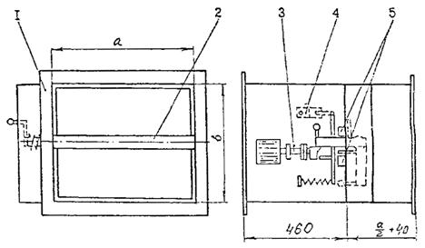
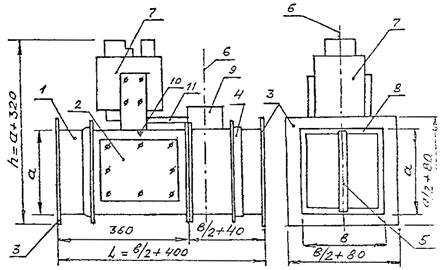
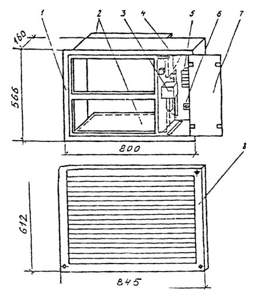
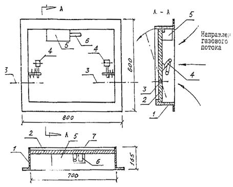
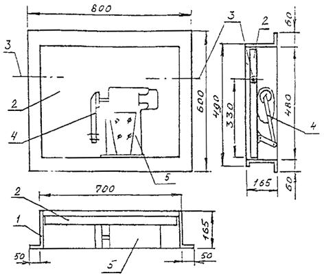
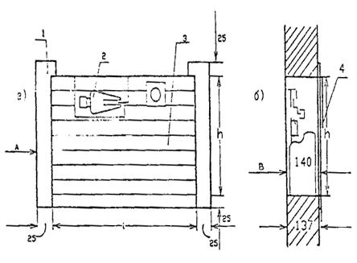
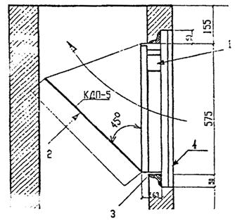
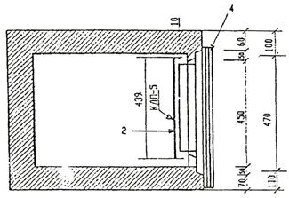

АКЦИОНЕРНОЕ
ОБЩЕСТВО ЗАКРЫТОГО ТИПА
ПРОМСТРОЙПРОЕКТ
ПОСОБИЕ 13.91 к СНиП 2.04.05-91
Противопожарные требования к системам
отопления, вентиляции и кондиционирования
|
Главный инженер |
И.Б. Львовский |
|
Главный специалист |
Б.В. Баркалов |
Москва 1994 г.
1.1. Температура теплоносителя (воды, пара и др.) или температура на поверхности электрических и газовых отопительных приборов в производственных помещениях категории А, Б или В, в торговых залах и помещениях для обработки и хранения материалов, содержащих легковоспламеняющиеся жидкости, должна приниматься, °С, не менее, чем на 20 % ниже температуры самовоспламенения веществ, находящихся в помещении, но не более:
150 - при водяном отоплении и отсутствии в помещении выделения горючей пыли и аэрозолей;
130 - при паровом отоплении и тех же условиях;
110 - при водяном и паровом отоплении и наличии в помещении выделений горючей пыли и аэрозолей - для помещений категорий А и Б;
130 - для помещений категории В при тех же условиях;
130 - при электрическом отоплении помещений категорий А и Б (кроме складов категорий А и Б, где электрическое отопление не допускается) во взрывозащищенном исполнении, при отсутствии источников выделения горячей пыли и аэрозолей;
110 - то же при наличии источников горючей пыли и аэрозолей, кроме указанных выше складов;
130 - при электрическом и газовом отоплении помещений категории В (кроме складов категории В, где электрическое и газовое отопление не допускается) при отсутствии в помещении источников выделения горючей пыли и аэрозолей;
110 - то же при наличии источников горючей пыли и аэрозолей (3.3. прил. 11)1).
_____________
1) В скобках приводятся ссылки на пункты и приложения СНиП 2.04.05-91 (далее СНиП) послуживших основой приведенных требований с учетом поправок по Приложению 9.
1.2. Электрическое и газовое лучистое отопление с высокотемпературными излучателями, с температурой поверхности не выше 250 °С допускается применять в полуоткрытых и неутепленных помещениях и зданиях общественного питания, в производственных помещениях категорий Г и Д без выделений пыли и аэрозолей, а также на отдельных рабочих местах с температурой воздуха ниже нормируемой, кроме помещений категорий А, Б или В (п. 3.4, 3.18, прил. 11).
1.3. В помещениях категорий А и Б запрещено применение водяного или парового отопления с местными нагревательными приборами, если в помещениях хранятся или применяются вещества, образующие при контакте с водой или водяными парами взрывоопасные смеси, или вещества, способные к самовозгоранию или взрыву при взаимодействии с водой (3.9).
1.4. Горячие поверхности отопительного и вентиляционного оборудования, трубопроводов и воздуховодов, размещенных в помещениях, в которых они создают опасность воспламенения газов, паров, аэрозолей или пыли, следует изолировать, предусматривая температуру на поверхности теплоизоляционной конструкции не менее, чем на 20 % ниже температуры, °С, их воспламенения (1.4).
При отсутствии технической возможности снизить температуру поверхности изоляции до указанного уровня отопительно-вентиляционное оборудование, трубопроводы и воздуховоды не следует размещать в указанных помещениях. Теплоизоляционные конструкции следует проектировать в соответствии со СНиП 2.04.14-88 (1.4, 1.5). Противопожарные требования к теплоизоляционным конструкциям - см. Приложение 1.
1.5. Прокладка транзитных трубопроводов систем отопления не допускается через помещения убежищ, электротехнические помещения и пешеходные галереи и тоннели. На чердаках допускается установка расширительных баков с тепловой изоляцией из негорючих материалов (3.36).
1.6. Расстояние (в свету) от поверхности трубопроводов, отопительных приборов и воздухонагревателей с теплоносителем температурой выше 105 °С до поверхности конструкции из горючих материалов следует принимать не менее 100 мм. При меньшем расстоянии следует предусматривать тепловую изоляцию этой конструкции из негорючих материалов (3.40).
1.7. Трубопроводы в местах пересечения перекрытий, внутренних стен и перегородок следует прокладывать в гильзах из негорючих материалов; края гильз должны быть на одном уровне с поверхностями стен, перегородок и потолков, но на 30 мм выше поверхности чистого пола.
Заделку зазоров и отверстий в местах прокладки трубопроводов следует предусматривать негорючими материалами, обеспечивая нормируемый предел огнестойкости ограждений (3.41).
1.8. Прокладка или пересечение в одном канале трубопроводов отопления с трубопроводами горючих жидкостей, паров и газов с температурой вспышки паров 170 °С и менее или агрессивных паров и газов не допускается (3.42).
1.9. В помещениях категорий А, Б и В отопительные приборы систем водяного и парового отопления (также газового и электрического)2) следует предусматривать с гладкой поверхностью, допускающей легкую очистку, в том числе:
____________
2) Требование в СНиП отсутствует, однако, его рекомендуется соблюдать для электрических и газовых отопительных приборов разрешенных п.п. 11а и 11б в Приложении 11 к СНиП.
а) радиаторы секционные или панельные одинарные;
б) радиаторы секционные или панельные спаренные или одинарные для помещений, в которых отсутствует выделение пыли горючих материалов (далее «горючая пыль»). Для помещений категории В, в которых отсутствует выделение горючей пыли, допускается применение конвекторов;
в) отопительные приборы из гладких стальных труб (3.44).
1.10. Отопительные приборы в помещениях категорий А, Б и В следует размещать на расстоянии (в свету) не менее, чем на 100 мм от поверхности стен. Не допускается размещать отопительные приборы в нишах (3.45).
1.11. В лестничных клетках не допускается размещать отопительные приборы, выступающие из плоскости стен на высоте до 2,2 м от поверхностей проступей и площадок лестницы, п. 4.11 СНиП 2.01.02-85*.
1.12. В помещениях для наполнения и хранения баллонов со сжатыми и сжиженными газами, а также в помещениях складов категорий А, Б и В и кладовых горючих материалов, или в местах, отведенных в цехах для складирования горючих материалов, отопительные приборы следует ограждать экранами из негорючих материалов, обеспечивая доступ к отопительным приборам для очистки.
Экраны следует устанавливать на расстоянии не менее 100 мм (в свету) от приборов отопления. Конвекторы с кожухом ограждать экранами не следует (3.57).
2.1. Системы вытяжной и аварийной вентиляции (далее «ВОб») следует предусматривать отдельными для каждой группы помещений, размещенных в пределах одного пожарного отсека (4.24).
Помещения одной категории по взрывопожарной опасности, не разделенные противопожарными преградами, а также имеющие отмытые проемы общей площадью более 1 м2 в другие помещения, допускается рассматривать как одно помещение (4.24).
Примечание. Требования к размещению в здании производственных помещений одной или разных категорий взрывопожарной опасности и отделения их друг от друга огнестойкими или неогнестойкими перегородками, а также к устройству тамбуров-шлюзов в местах проемов в противопожарных перегородках приведены в п.п. 2.8*, 2.9, 2.10*, 2.11, 2.12 СНиП 2.09.02.85* - «Производственные здания».
Согласно этим требованиям: «При размещении в помещении технологических процессов с одинаковой взрывоопасной и пожарной опасностью необходимость их отделения друг от друга перегородками, а также устройство тамбур-шлюзов в местах проемов в этих перегородках должны быть обоснованы в технологической части проекта, при этом применение противопожарных перегородок не является обязательным, кроме случаев предусмотренных нормами технологического проектирования».
2.2. Системы ВОб следует проектировать общими для помещений:
а) жилых;
б) общественных, административных и производственных категории Д (в любых сочетаниях);
в) производственных одной из категорий А или Б, размещенных не более, чем на трех этажах;
г) производственных одной из категорий В, Г или Д;
д) складов и кладовых одной из категорий А, Б или В, размещенных не более, чем на трех этажах;
е) категорий А, Б и В в любых сочетаниях и складов категорий А, Б и В в любых сочетаниях общей площадью не более 1100 м2, если помещения размещены в отдельном одноэтажном здании и имеют двери только непосредственно наружу;
ж) категории Г и Д и складов категории Д;
и) бытовых помещений - санитарных узлов, душевых, бань, прачечных и др. помещений бытового назначения (4.25).
Примечание. Из пункта 2.2б изъяты бытовые помещения, которые включены самостоятельно в п. 2.2к - так как общие системы для административных и бытовых помещений не применяются.
2.3. Системы ВОб допускается соединять в одну систему для следующих групп помещений, присоединяя к одной группе помещений помещения другой группы площадью не более 200 м2:
а) жилые и административные или общественные с учетом требований соответствующих нормативных документов - (имеются в виду СНиП на жилые, административные, бытовые и общественные здания), при условии установки огнезадерживающего клапана на сборном воздуховоде присоединяемой группы помещений другого назначения;
б) производственные категорий Г и Д, административно-бытовые, кроме помещений с массовым пребыванием людей;
в) производственные категорий А, Б или В и производственные любых категорий, в том числе склады и кладовые (или помещения другого назначения, кроме жилых помещений и помещений с массовым пребыванием людей) при условии установки огнезадерживающего клапана на сборном воздуховоде присоединяемой группы помещений другого назначения (4.26).
Например:
а) жилые помещения + 200 м2 административных или бытовых;
б) жилые помещения + 200 м2 общественных помещений;
в) производственные помещения + 200 м2 административных или бытовых помещений.
В каждом варианте первой указана основная группа помещения, к которой через огнезадерживающий клапан на сборном воздуховоде может быть присоединено 200 м2 помещений «присоединяемой группы». В каждой из соединяемых групп «основная группа» может быть «присоединяемой» и присоединяемая - основной, но присоединяемая должна иметь общую площадь не более 200 м2 и присоединяться к общей системе через огнезадерживающий клапан (кроме подпункта «б»).
Помещения с массовым постоянным или временным пребыванием людей не должны соединяться общим воздуховодом с другими помещениями ни в качестве основных, ни присоединяемых.
Примечание. Пункт 4.26б не содержит требования о применении огнезадерживающего клапана при соединении группы помещений категорий Г и Д к воздуховодам административных или бытовых помещений. В помещениях категории Г может применяться открытый огонь, а административные и бытовые помещения пожароопасны, и их часто приравнивают к помещениям категории В, поэтому Промстройпроект рекомендует устанавливать огнезадерживающий клапан на ответвлениях к помещениям категории Г.
При проектировании прокладки воздуховодов в зданиях рекомендуется пользоваться «Пособием 7.91 к СНиП 2.04.05-91 Схемы прокладки воздуховодов в здании», изданном Промстройпроектом в 1993 году.
2.4. Системы ВОб для помещений категорий В, Г и Д, удаляющие воздух из 5-ти метровой зоны вокруг оборудования, содержащего горючие вещества, которые могут образовывать в этой зоне взрывопожароопасные смеси, следует проектировать отдельными от других систем этих помещений (4.29).
2.5. Системы ВОб для помещений категорий А и Б следует предусматривать с одним резервным вентилятором (для каждой системы или для нескольких систем), обеспечивающим расход воздуха, необходимый для поддержания в помещении концентрации горючих паров, аэрозолей или пыли , не превышающих 10 % нижнего концентрационного предела распространения пламени (далее «0,1 НКПРП») по газо-, паро- и пылевоздушным смесям (4.21).
Резервный вентилятор не следует устанавливать, если при остановке системы может быть остановлено технологическое оборудование и прекращено выделение горючих газов, аэрозолей или пыли, или если в помещении предусмотрена аварийная вентиляция, обеспечивающая 0,1 НКПРП; если резервный вентилятор не устанавливается, то должно быть предусмотрено включение аварийной сигнализации (4.21 а, б).
Примечание. Для поддержания 0,1 НКПРП, как правило, требуется вентилятор в несколько раз меньшей производительности, чем для основного назначения, поэтому в ряде случаев целесообразно проектировать к установке два вентилятора - основной и резервный одинаковой производительности, равной 50 % от необходимой по основному назначению.
2.6. Системы ВОб для помещений категорий А и Б, а также для складов категорий А, Б и В с выделением горючих газов, паров, аэрозолей и пыли следует предусматривать с искусственным побуждением (4.36, 4.33).
Допускается предусматривать такие системы с естественным побуждением, если выделяемые газы и пары легче воздуха, и требуемый воздухообмен не превышает двукратного в 1 ч. предусматривая удаление воздуха только из верхней зоны. Для помещений складов категорий А и Б вместимостью более 10 т необходимо предусматривать резервную систему вытяжной вентиляции с искусственным побуждением на требуемый воздухообмен, размещая местное управление системой при входе (4.33).
В производственных помещениях, в которых выделяются горючие газы или пары, из верхней зоны следует удалять не менее однократного обмена воздуха в час, а в помещениях высотой более 6 м - не менее 6 м3/ч на 1 м2 площади помещения (4.53).
2.7. В помещениях категорий А и Б системы ВОб должны обеспечивать отрицательный дисбаланс воздуха при разности давления не менее 10 Па по отношению к защищаемым помещениям, т.е. по отношению к помещениям, сообщающимся с ними дверями, или проемами (4.52), кроме «чистых» помещений, в которых необходимо поддерживать избыточное давление воздуха.
2.8. Приемные отверстия систем ВОб для удаления смеси воздуха с взрывоопасными газами, парами или аэрозолями из верхней зоны помещений следует размещать:
а) не ниже 0,4 м от плоскости потолка или покрытия до верха отверстий при удалении взрывоопасных смесей газов, паров и аэрозолей (кроме смеси водорода с воздухом);
б) не ниже 0,1 м от плоскости потолка или покрытия до верха отверстий в помещениях высотой 4 м и менее, или не ниже 0,025 высоты помещения (но не более 0,4 м) в помещениях высотой более 4 м - при удалении смеси водорода с воздухом (4.59).
2.9. Воздух систем ВОб из помещений категорий А и Б (кроме воздушных и воздушно-тепловых завес у наружных ворот и дверей) и из 5-ти метровых зон вокруг оборудования, расположенного в помещениях категорий В, Г и Д, если в этих зонах могут образовываться взрывоопасные смеси горючих газов, паров, пыли или аэрозолей с воздухом, не допускается использовать для рециркуляции (4.47, см. также п. 3.14 Пособия).
2.10. Аварийная вентиляция для производственных помещений, в которых возможно внезапное поступление больших количеств горючих газов, паров или аэрозолей, следует предусматривать в соответствии с требованиями технологической части проекта, учитывая несовместимость во времени аварий технологического и вентиляционного оборудования (4.61). Расходы воздуха для аварийной вентиляции следует принимать по данным технологической части проекта (4.62).
Примечание. После прекращения поступления в помещение аварийной массы или объема взрывоопасных веществ расход воздуха для приведения концентрации к 0,1 НКПРП зависит от отведенного на это времени.
При отсутствии указаний технологов о необходимом расходе воздуха или отводимом времени для доведения концентрации до 0,1 НКПРП Промстройпроект рекомендует определять расход на основании ранее действовавших норм СНиП 2.04.05-86. п. 4.62, равным 50 м3/ч на 1 м2 площади помещения высотой 6 м и менее, кроме насосных и компрессорных станций категорий А и Б, для которых аварийная вентиляция должна обеспечивать указанный воздухообмен в дополнение к воздухообмену, создаваемому основными системами.
2.11. Аварийную вентиляцию помещений категорий А и Б следует проектировать с искусственным побуждением.
Если температура, категория и группа взрывоопасной смеси горючих газов, паров и аэрозолей не соответствует данным технологических условий на взрывозащищенные вентиляторы, то системы аварийной вентиляции следует предусматривать с взрывозащищенными эжекторами для зданий любой этажности, или приточную вентиляцию с взрывозащищенными обратными клапанами, устанавливаемыми в местах пересечения воздуховодами ограждений помещений для вентиляционного оборудования. Аварийную вентиляцию для вытеснения газов или паров через аэрационные фонари, шахты или дефлекторы допускается применять для одноэтажных зданий, в которые при аварии поступают горючие газы или пары плотностью меньше плотности воздуха (4.63).
2.12. Аварийную вентиляции помещений категорий В, Г или Д следует проектировать с искусственным побуждением; допускается проектировать аварийную вентиляцию с естественным побуждением при условии обеспечения требуемого расхода воздуха при расчетных параметрах Б в теплый период года (4.64).
2.13. Для аварийной вентиляции следует использовать:
а) основные и резервные системы (вентиляторы) общеобменной вентиляции и системы местных отсосов, обеспечивающие при одновременной работе расход воздуха, необходимый для аварийной вентиляции;
б) системы, указанные в п.п. «а», и системы аварийной вентиляции на недостающий расход воздуха;
в) только системы аварийной вентиляции, если использование основных и резервных систем невозможно или нецелесообразно (4.65).
Примечание. Расход воздуха при одновременной работе основного и резервного вентиляторов следует определять по расчету. Ориентировочно, при установке перекидного клапана в среднее положение рекомендуется принимать его равным 130 % от основного расхода. При отдельных выхлопных трубах и общей всасывающей магистрали - 150 % основного.
2.14. Аварийную противодымную вентиляцию для удаления дыма при пожаре следует проектировать для обеспечения эвакуации людей из помещений здания в начальной стадии пожара, возникшего в одном из помещений (5.1).
2.15. Удаление дыма следует предусматривать:
а) из коридоров или холлов производственных, общественных, административных и бытовых зданий высотой, более 26,5 м от средней планировочной отметки;
б) из коридоров длиной более 15 м, не имеющих естественного освещения световыми проемами в наружных ограждениях (далее - «без естественного освещения») производственных зданий категорий А, Б и В с числом этажей 2 и более (5.2);
в) из коридоров жилых зданий высотой 10 этажей и более с незадымляемыми лестничными клетками;
Примечание. Согласно СНиП 2.08.01-89 п. 1.31 «В жилых зданиях коридорного типа высотой 10 этажей и более при общей площади квартир на этаже 500 м2 и более следует предусматривать не менее двух незадымляемых лестничных клеток ...», а по п. 1.29 «... общей площадью квартир на этаже менее 500 м2 следует предусматривать выход на одну незадымляемую лестничную клетку ...».
г) из коридоров общественных зданий согласно СНиП 2.08.02-89 п. 1.137 «В зданиях высотой 10 наземных этажей и более лестничные клетки следует проектировать незадымляемыми»;
д) согласно п. 1.158 СНиП 2.03.02-89 «В общественных зданиях высотой менее 10 этажей в коридорах без естественного освещения, предназначенных для эвакуации 50 и более человек, должно быть предусмотрено дымоудаление;
е) в СНиП 2.09.04-87 «Административные и бытовые здания» п. 1.23, при проектировании зданий высотой 10 - 16 этажей следует учитывать дополнительные требования к указанным зданиям в соответствии со СНиП 2.08.02-89 (так как им заменен СНиП 2.08.02-85), т.е. надлежит руководствоваться сказанным в п. 2.15г или 2.15а потому, что административные и бытовые здания упомянуты в п. 5.26 СНиП;
ж) согласно п. 1.27 СНиП 2.09.04-87, из расположенных в надземных и цокольных этажах и не имеющих естественного освещения коридоров при любых их площадях и гардеробных площадью более 200 м2 должна быть предусмотрена вытяжная вентиляция для удаления дыма в соответствии со СНиП 2.04.05-86, которым заменен СНиП 2.04.05-86. Так как административные помещения по пожарной опасности, как правило, приравниваются к производственным помещениям категории В, то при проектировании дымоудаления из коридоров без естественного освещения надлежит руководствоваться п. 5.2 СНиП или п. 2.15б «Пособия»;
з) согласно СНиП 2.11.01-85 «Складские здания», п. 2.18 «требования к путям эвакуации и выходам, устройству дымоудаления ...» следует принимать в соответствии со СНиП 2.04.05-91.
2.16. Удаление дыма следует проектировать:
а) из каждого производственного или складского помещения с постоянными рабочими местами без естественного освещения или с естественным освещением, не имеющим механизированных приводов для открывания фрамуг в верхней части окон из уровне 2,2 м и выше от пола до низа фрамуг и для открывания проемов в фонарях (в обоих случаях площадью, достаточной для удаления дыма при пожаре), если помещения отнесены к категориям А, Б или В в зданиях любой степени огнестойкости, кроме IVа степени огнестойкости, где дымоудаление необходимо, если помещения отнесены к категориям Г и Д;
Примечание. Слова: «не имеющего механизированных приводов для открывания фрамуг ...» следует рассматривать вместе с п. 7.4 «Пособия», из которого следует, что фрамуги, как и проемы в фонарях, должны иметь «автоматическое дистанционное и ручное управление». Как правило, такие механизмы в существующих зданиях отсутствуют, но в настоящее время организуется их производство. Следовательно, требования п. «а» относятся ко всем перечисленным там производственным зданиям как без естественного, так и с естественным освещением;
б) из каждого помещения, не имеющего естественного освещения: общественного или административно-бытового, если оно предназначено для массового пребывания людей;
в) помещения 55 м2 и более, предназначенного для хранения или использования горючих материалов, если в нем имеются постоянные рабочие места;
г) помещения гардеробных площадью 200 м2 и более (5.2).
2.17. Допускается проектировать удаление дыма из производственных помещений категории В площадью 200 м2 и менее через примыкающий к ним коридор (5.2)
Примечание. 200 м2 - это, как правило, площадь 3-х - 7-ми помещений, для каждого из которых по основному правилу необходимо предусматривать отдельное удаление дыма. Возможность устройства одного дымоприемника в коридоре длиной 30 м и менее значительно упрощает и удешевляет систему дымоудаления.
2.18. Требования пункта 5.2 СНиП, изложенные в п.п. 2.15 - 2.16 «Пособия», не распространяются:
а) на помещения категории В, а в зданиях IVа степени огнестойкости и на помещения категорий Г и Д, а также на общественные, административные и бытовые, если время заполнения помещений дымом, определяемое по формуле (7) СНиП, больше времени, необходимого для безопасной эвакуации людей из помещения. Время заполнения помещений дымом по формуле (1) t сек (в СНиП формула 7) имеет вид:
где: А ≤ 1600 м2 - площадь помещения или часть его площади, именуемой «резервуар дыма», если она не превышает 1600 м2 и выгорожена по периметру негорючими завесами, спускающимися с потолка (перекрытия);
у - уровень нижней границы дыма, принимаемый для помещений 2,5 м, а для резервуаров дыма - высота от нижней кромки завес до пола помещения;
Н - высота помещения, м;
Ро - периметр очага пожара принимается равным большему из периметров открытых или негерметически закрытых емкостей горючих веществ в оборудовании или мест складирования горючих веществ или негорючих веществ, материалов, деталей в горючей упаковке, но не более Ро = 12 м.
При отсутствии указанных выше данных допускается определять периметр очага пожара по формуле:
|
4 ≤ Ро = 0,38 А10,5 ≤ 12, |
(2) |
где: А1 - площадь помещения или резервуара дыма, м2; при А1 < 100 м2 следует принимать А1 = 100 м2, при А1 > 1000 м2 - принимать А1 = 1000 м2;
Примечание. Время безопасной эвакуации людей из помещения рассчитывается по ГОСТ 12.1.004-91 «Пожарная безопасность. Общие требования». Весь комплекс расчетов по разделу СНиП «Противопожарная защита при пожаре» рекомендуется вести по «Пособию 4.91 к СНиП 2.04.05-91 (2 редакция)», издание Промстройпроекта, 1992 г.
б) на помещения площадью менее 200 м2, оборудованные установками автоматического водяного или пенного пожаротушения, кроме помещений категорий А и Б;
в) на помещения, оборудованные установками автоматического газового пожаротушения;
г) на лабораторные помещения категории В площадью 36 м2 и менее;
д) на коридоры и холлы, если для всех помещений, имеющих двери в этот коридор или холл, проектируется непосредственное удаление дыма.
Примечание. Если на площади основного помещения, для которого предусмотрено удаление дыма, расположены другие помещения площадью каждое 50 м2 и менее, то отдельное удаление дыма из этих помещений допускается не предусматривать, при условии расчета расхода дыма с учетом суммарной площади этих помещений (5.2).
2.19. Согласно СНиП 2.08.02-89 «Общественные здания и сооружения» дымоудаление при пожаре необходимо проектировать:
а) в хранилищах библиотек и архивов, складах площадью более 36 м2 при отсутствии окон ... (1.69);
б) в помещениях макетных мастерских, в которых происходят процессы, относимые к производствам категории А ... (1.70);
в) в торговых залах без естественного освещения … (1.72);
г) в магазинах по продаже легковоспламеняющихся материалов, а также горючих жидкостей (масел, красок, растворителей и т.п., 1.73);
д) в кладовых горючих товаров и товаров в горючей упаковке; кладовые следует разделять на отсеки площадью не более 700 м2, допуская в пределах каждого отсека установку сетчатых или не доходящих до потолка перегородок. Дымоудаление в этом случае предусматривается на отсек в целом (1.74).
Примечание. Проектирование дымоудаления по п. 2.19 а - д рекомендуется вести, руководствуясь п.п. 2.16-2.18 Пособия (и Пособием 4.51 к СНиП 2.04.05-91), т.к. в СНиП 2.08.02-89 приведены устаревшие решения, не обеспечивающие необходимого эффекта.
2.20. Согласно СНиП 2.11.01-85* «Складские здания» «... требования к эвакуационным путям и выходам, устройству дымоудаления ...» принимать по СНиП 2.04.05-91 (вместо -86). При наличии открывающихся оконных проемов, расположенных в верхней части наружной стены, в помещениях глубиной до 30 м устройство дымоудаления не требуется. В этом случае площадь оконных проемов определяется по расчету дымоудаления в соответствии с требованиями СНиП 2.04.05-91.
Примечание. В СНиП 2.04.05-91 по сравнению со СНиП-86 глубина помещения от окон с 30 м сокращена до 15 м (п. 5.10).
2.21. Согласно СНиП 2.10.02-84 п. 2.7 «Здания и помещения для хранения и переработки сельскохозяйственной продукции», п. 2.7 «… обеспечение эвакуации людей и дымоудаление из зданий ...» следует предусматривать в соответствии со СНиП П-90-81 (заменен СНиП 2.09.02-85 «Производственные здания»).
Примечание. Рекомендуется при проектировании дымоудаления руководствоваться СНиП 2.04.05-91.
2.22. Согласно СНиП 2.10.03-84 «Животноводческие, птицеводческие и звероводческие здания и помещения», п. 2.8 «Дымоудаление из смещений, не имеющих световых и светоаэрационных фонарей, должно предусматриваться в соответствии со СНиП II-90-81 (заменен, см. п. 2.21); при этом устройство автоматического открывания вытяжных шахт при пожаре не требуется.
Примечание. Рекомендуется руководствоваться СНиП 2.04.05-91.
2.23. Согласно СНиП 2.09.03-85 «Сооружения промышленных предприятий», п. 1.12. «Кабельные сооружения должны быть обеспечены системами дымоудаления», п. 4.29 «Кабельные тоннели должны быть обеспечены независимой вентиляцией каждого отсека, автоматически отключающейся при подаче импульса от системы пожарной сигнализации».
Примечание. Имеется разночтение между СНиП 2.09.03-85 и ПУЭ, согласно п. 2.3.132 ПУЭ - специальной системы дымоудаления для кабельных тоннелей не требуется.
Примечание. Последнюю фразу следует рассматривать, как возможность совмещения обычной вентиляции с системой дымоудаления.
2.24. Согласно СНиП 2.09.03-85, п. 15.23 «... вентиляционные устройства кабельных галерей должны быть оборудованы заслонками для предотвращения доступа воздуха в случае возникновения пожара».
2.25. Удаление дыма и газов после пожара из помещений, защищаемых установками газового пожаротушения, следует предусматривать с искусственным побуждением из южней зоны помещений. В местах пересечения воздуховодами (кроме транзитных) ограждения помещений следует предусматривать огнезадерживающие клапаны с пределом огнестойкости не менее 0,25 ч (5.13).
2.26. В помещениях холодильных установок следует предусматривать общеобменную вентиляцию, рассчитанную на удаление избытков теплоты. При этом вытяжную вентиляцию с искусственным побуждением следует проектировать для обеспечения воздухообмена в помещении в 1 час, не менее:
а) трехкратного, а при аварии - пятикратного при применении хладонов типов 11, 12, 22, 500, 502;
б) четырехкратного, а при аварии - 11-кратного воздухообмена при применении аммиака (6.16).
2.27. Расход воздуха для вентиляции и кондиционирования воздуха помещений с искусственным охлаждением воздухоохладителями, в которых циркулирует хладон, должен проверяться на допустимую аварийную концентрацию хладонов,
|
г/м3: |
570 |
500 |
360 |
410 |
460 |
|
при хладоне: |
11 |
12 |
22 |
500 |
502. |
В соответствии с п. 6.5 СНиП: «Поверхностные воздухоохладители (испарители хладонов) и контактные воздухоохладители (форсуночные камеры и др.), присоединенные по одноконтурной водяной (рассольной) системе холодоснабжения с закрытыми испарителями хладонов, допускается применять:
а) для помещений, в которых не используется открытый огонь;
б) если испарители включены в автономный контур циркуляции хладона одной холодильной машины;
в) если масса хладона при аварийном выбросе его из контура циркуляции в меньшее из обслуживаемых помещений не превысит аварийной концентрации, приведенной выше».
2.28. Если воздухоохладитель обслуживает группу помещений, то концентрацию хладона, q г/м3, в любом из этих помещений следует определять по формуле:
|
q = М∙Р/(Роб∙О), |
(3) |
где: М - масса хладона в контуре циркуляции, г;
Р - расход наружного воздуха, подаваемого в данное помещение, м/ч;
Роб - общий расход наружного воздуха, подаваемого во все помещения группы, м/ч;
О - объем любого из помещений, м3 (6.5).
2.29. Устья выхлопных труб для хладона из предохранительных клапанов следует предусматривать не менее, чем на 2 м выше окон и дверей и воздухоприемных отверстий и не менее, чем на 5 м выше уровня земли. Выхлоп хладагента следует направлять вверх.
Устье выхлопных труб для аммиака следует выводить не менее, чем на 3 м выше кровли наиболее высокого здания, расположенного в радиусе 50 м (6.15).
Выбросы пылегазовоздушной смеси из системы с искусственным побуждением помещений категорий А и Б и взрывоопасной смеси из местных отсосов следует предусматривать через трубы и шахты, не имеющие зонтов, вертикально вверх (7.4).
2.30. Согласно п. 1.62 СНиП 2.08.02-89 «В покрытии над сценой должны устраиваться дымовые люки ...», причем площадь сечения люков определяется расчетом или принимается 2,5 % площади колосниковой сцены на каждые 10 м высоты от пола трюма до покрытия сцены».
Открывание клапанов люков должно происходить под действием собственного веса при освобождении их от удерживающих приспособлений, при этом следует учитывать силы смерзания кромок по периметру клапана, принимаемые 0,3 кН/м.
При устройстве дымовых люков в противоположных стенах сценической коробки должна быть обеспечена их незадуваемость.
Лебедка, обслуживающая клапаны люков, должна иметь дистанционное управление с планшета сцены, из помещения пожарного поста диспетчерской и помещения для этой лебедки.
3.1. Системы местных отсосов взрывоопасных смесей (далее «МО») следует проектировать с концентрацией смеси горючих газов, паров, пыли и аэрозолей в воздухе не более 50 % нижнего концентрационного предела распространения пламени, далее - «НКПРП», при температуре уделяемой смеси. (4.14).
3.2. Системы МО взрыво- пожароопасных смесей следует проектировать отдельными от систем общеобменной вентиляции (4.28), кроме общеобменной вентиляции и МО для кладовых категории А оперативного хранения исследуемых веществ в лабораториях (СНиП, приложение 18, п. 3), которые допускается проектировать в виде общей системы.
Общую вытяжную систему общеобменной вентиляции и местных отсосов допускается проектировать для одного лабораторного помещения категорий В, Г и Д, если в оборудовании, снабженном местными отсосами, не образуются взрывоопасные смеси (прил. 18, п. 3).
Системы МО следует проектировать общими для помещений, указанных в п. 2.2 Пособия и присоединять к одной группе помещений помещения другой группы (площадью не более 200 м2) в соответствии с указанным в п. 2.3 Пособия, не нарушая при этом требований настоящего раздела.
3.3. Системы МО горючих веществ, оседающих или конденсирующихся в воздуховодах или вентиляционном оборудовании, следует проектировать отдельными для каждого помещения или для каждого технологического оборудования (4.35).
3.4. Системы МО следует проектировать отдельными для каждого из отсасываемых веществ, соединение которых может создать взрывоопасную смесь или создать более опасные или вредные вещества; о возможности объединения систем МО горючих веществ должно быть указано в технологической части проекта (4.32).
3.5. Оборудование МО взрывоопасных смесей или отсасывающих невзрывоопасные вещества в смеси с воздухом из помещений категорий А и Б (далее «МО взрывоопасных смесей») следует предусматривать во взрывозащищенном исполнении. Оборудование в обычном исполнении следует предусматривать для систем МО взрывоопасных смесей, размещенных в помещениях категорий В, Г и Д, если в соответствии с нормами технологического проектирования исключена возможность образования в указанной смеси взрывоопасной концентрации при нормальной работе или при аварии технологического оборудования (4.74).
3.6. Если температура, категория и группа взрывоопасной смеси горючих газов, паров, аэрозолей, пылей с воздухом не соответствует техническим условиям на взрывозащищенные вентиляторы, то следует предусматривать эжекторные установки. В системах с эжекторными установками следует предусматривать вентиляторы, воздуходувки и компрессоры в обычном исполнении, если они работает на наружном воздухе (4.74).
3.7. Оборудование систем для помещений категорий А и Б, а также оборудование систем МО взрывоопасных смесей не допускается размещать в помещениях подвалов (4.84).
3.8. Оборудование систем МО взрывоопасных смесей следует размещать отдельно от другого вентиляционного оборудования, если в системе имеются сухие пылеуловители или фильтры, или в воздуховодах возможно отложение горючих веществ (4.96; 4.95).
3.9. Оборудование систем МО допускается размещать в обслуживаемых ими помещениях (4.82).
3.10. Следует предусматривать установку одного резервного вентилятора (в том числе для эжекторных установок) на каждую систему МО взрывоопасных смесей или на каждые две такие системы, если при остановке работающего вентилятора не может быть остановлено обслуживаемое им технологическое оборудование, и концентрация отсасываемых горючих газов, паров или пыли в воздухе помещений превысит 0,1 НКПРП; установку резервного вентилятора допускается не предусматривать, если концентрация отсасываемых веществ в воздухе помещения 0,1 НКПРП может быть обеспечена аварийной системой вентиляции, автоматически включаемой при превышении 0,1 НКПРП (4.21).
3.11. Расстояние от источников выбросов систем местных отсосов взрывоопасной парогазовоздушной смеси до ближайшей точки возможных источников воспламенения (искры, газы с высокой температурой и др.) X, м, следует принимать не менее:
|
Х = 4Дq/qx ≥ 10, |
(4) |
где: Д - диаметр устья источника, м;
q - концентрация горючих газов, паров и пыли в устье выброса, мг/м3;
qх - концентрация горючих газов, паров и пыли, равная 0,1 НКПРП - нижнего концентрационного предела распространения пламени, мг/м3 (7.6).
3.12. Выбросы взрывоопасной пылегазовоздушной смеси из систем местных отсосов следует предусматривать через трубы и шахты, не имеющие зонтов, вертикально вверх (7.4).
3.13. Для систем МО взрывоопасных смесей следует предусматривать сигнализацию: «включено», «авария» (9.9), а также автоматическое блокирование этих систем с обслуживаемым оборудованием и блокирование подачи, воды в мокрые фильтры с работой вентиляторов (9.10).
3.14. Рециркуляция воздуха из систем МО взрывоопасных смесей не допускается (4.47).
4.1. Противопожарные требования, изложенные в пунктах 2.1, 2.2 и 2.3 Пособия полностью относятся к системам приточной общеобменной вентиляции, кондиционирования воздуха и воздушного отопления (далее «ПОб»).
4.2. Системы ПОб для круглосуточной и круглогодичной подачи наружного воздуха в один или группу тамбуров-шлюзов помещений категорий А и Б следует проектировать отдельными от систем другого назначения, предусматривая резервный вентилятор.
Подачу воздуха в тамбур-шлюзы одного помещения или в тамбур-шлюзы группы помещений категорий А и Б и в тамбур-шлюз помещения для вентиляционного оборудования категорий А и Б допускается проектировать от приточной системы, предназначенной для данных помещений, или от системы (без рециркуляции), обслуживающей помещения категорий В, Г и Д, предусматривая резервный вентилятор на требуемый воздухообмен для тамбур-шлюзов и автоматическое отключение притока воздуха в помещения категорий А, Б, В, Г или Д при возникновении пожара (4.31).
Примечание. Рекомендуется прибегать к допущению, изложенному во втором абзаце п. 4.2, только в случаях, когда производительность приточной системы, используемой для подачи воздуха в тамбур-шлюзы, не более, чем в три раза превышает потребность в воздухе тамбур-шлюзов, и при умеренном соотношении давлений, на которые, рассчитан вентилятор приточной системы, и давления, потребного для тамбур-шлюзов.
4.3. Общие приемные устройства для наружного воздуха не следует проектировать для оборудования систем ПОб, которые не допускается размещать в одном помещении (4.41).
4.4. Расход приточного воздуха (наружного или смеси наружного и рециркуляционного) следует определять расчетом, и принимать не менее большего из требуемых для обеспечения норм взрывопожаробезопасности (4.42):
|
|
(5) |
где: М - расход каждого из взрывоопасных веществ, поступающих в воздух помещения, мг/ч;
НКПРП - нижний концентрационный предел распространения пламени по газо-, паро- и пылевоздушной смеси - принимается по Справочнику «Пожаровзрывоопасность веществ и материалов и средства их тушения», под редакцией А.Н. Баратова и А.Я. Корольченко. Москва, «Химия», 1990 г. в 2-х томах, мг/м3;
qпр - концентрация взрывоопасного вещества в воздухе, подаваемом в помещение, мг/м3.
4.5. Расход воздуха, подаваемого в тамбур-шлюзы, следует принимать из расчета создания и поддержания в них избыточного давления 20 Па (при закрытых дверях) по отношению к давлению в помещении, для которого предназначен тамбур-шлюз, учитывая разницу давлений между помещениями, разделяемыми тамбур-шлюзом. Расход воздуха, подаваемого в тамбур-шлюз, должен быть не менее 250 м3/ч.
Расход воздуха, подаваемого в машинное отделение лифтов в зданиях категорий А и Б, следует определять расчетом для создания давления на 20 Па выше давления примыкающей части лифтовой шахты (4.44).
Примечание. Расчеты расходов воздуха по п. 4.5 приведены в Пособии 1.91 к СНиП 2.04.05-91, издание Промстройпроекта.
Разность давления воздуха в тамбур-шлюзе (в машинном отделении лифтов) и примыкающем помещении не должна превышать 50 Па (4.44).
Примечание. Если возникает опасность в повышении давления выше 50 Па, необходимо предусмотреть установку клапанов, сбрасывающих избыточный расход воздуха.
4.6. Рециркуляция воздуха не допускается:
а) из помещений категорий А и Б, кроме воздушных и воздушно-тепловых завес у наружных ворот и дверей;
б) из 5-ти метровых зон вокруг оборудования, расположенного в помещениях категорий В, Г и Д, если в этих зонах могут образовываться взрывоопасные смеси горючих газов, паров, аэрозолей с воздухом;
в) из системы отсосов взрывоопасных смесей с воздухом;
г) из тамбуров-шлюзов (4.47).
4.7. Для помещений категорий А и Б следует предусматривать отрицательный дисбаланс, кроме «чистых» помещений, в которых необходимо поддерживать избыточное давление воздуха. Расход воздуха для обеспечения дисбаланса. определяется из расчета создания разности давлений не менее 10 Па по отношению к давлению в защищаемом помещении при закрытых дверях, но не менее 100 м3/ч на каждую дверь защищаемого помещения.
При наличии тамбур-шлюза расход воздуха для обеспечения дисбаланса принимается равным расходу, подаваемому в тамбур-шлюз (4.52).
4.8. В производственных помещениях с выделением горючих газов или паров следует удалять воздух из верхней зоны в объеме но менее однократного воздухообмена в 1 час, а в помещениях высотой более 6 м - не менее 6 м3/ч на 1 м2 площади помещения (4.58).
4.9. Оборудование во взрывозащищенном исполнении следует предусматривать для систем ПОб:
а) если оно размещено в помещениях категорий А и Б или в воздухоотводах систем, обслуживающих эти помещения;
б) для систем с воздуховоздушными теплоутилизаторами, использующими воздух из помещений категорий А и Б (4.74; 8.5).
4.10. Оборудование приточных систем для помещений категорий А и Б, а также воздуховоздушные теплоутилизаторы для этих помещений с использованием теплоты воздуха из помещений других категорий, размещаемые в помещениях для вентиляционного оборудования, следует принимать в обычном исполнении, если предусмотрены взрывозащищенные обратные клапаны в местах пересечения воздуховодами ограждений помещения для вентиляционного оборудования (4.75).
4.11. При нагревании воздуха в приточных и рециркуляционных установках следует принимать температуру теплоносителя (воды, пара и др.) воздухонагревателей и теплоотдающих поверхностей электро- и газовоздухонагревателей в соответствии с категорией помещения для вентиляционного оборудования или категорией или назначением помещения, в котором размещены указанные установки, но не выше 150 °С (4.11). Температура воздуха при выходе в помещение должна быть не менее, чем на 20 % ниже температуры самовоспламенения, °С, газов, паров, аэрозолей и пыли, выделяющихся в помещении (4.10).
4.12. Подачу наружного воздуха при пожаре для противодымной защиты зданий следует предусматривать:
а) в лифтовые шахты при отсутствии у выхода из них тамбуров-шлюзов в зданиях с незадымляемыми лестничными клетками 1, 2 и 3 типов;
б) в незадымляемые лестничные клетки 2-го типа;
в) в тамбуры-шлюзы при незадымляемых лестничных клетках 3-го типа;
г) в тамбуры-шлюзы перед лифтами в подвальном этаже общественных, административно-бытовых и производственных зданий;
д) в тамбуры-шлюзы перед лестницами в подвальных этажах с помещениями категории В
Примечание. В плавильных, литейных, прокатных и других горячих цехах в тамбуры-шлюзы допускается подавать воздух, забираемый из аэрируемых пролетов здания.
е) в машинные помещения лифтов в зданиях категорий А и Б, кроме лифтовых шахт, в которых при пожаре поддерживается избыточное давление воздуха (5.15).
Примечание. Согласно СНиП 2.01.02-85* «Незадымляемые лестничные клетки» устраиваются следующих типов:
1-й - с выходом через наружную воздушную зону по балконам, лоджиям, открытым переходам, галереям;
2-й - с подпором воздуха при пожаре;
3-й с выходом в лестничную клетку через тамбур-шлюз с подпором воздуха (постоянно или при пожаре).
Незадымляемые лестничные клетки в пределах первого этажа должны иметь выходы только наружу. Незадымляемые лестничные клетки 1-го типа должны сообщаться с первым этажом через воздушную зону (4.16; 4.23).
4.13. В зданиях категорий А и Б следует предусматривать незадымляемые лестничные клетки 3-го типа с естественным освещением и постоянным подпором воздуха в тамбуры-шлюзы (СНиП 2.09.02-85, п. 2.36).
Примечание. В условиях нормальной эксплуатации расход воздуха в тамбуры-шлюзы рассчитывают при обеих закрытых дверях, а во время пожара - при одной открытой двери в коридор или холл; расчеты приведены в Пособии 1.91 Промстройпроекта.
4.14. Расход наружного воздуха для противодымной защиты следует рассчитывать на обеспечение давления воздуха не менее 20 Па:
а) в нижней части лифтовых шахт при закрытых дверях в лифтовых шахтах из всех этажах, кроме нижнего;
б) в нижней части каждого отсека незадымляемых лестничных клеток 2-го типа при открытых дверях на пути эвакуации из коридоров и холлов на этаже пожара в лестничную клетку и из здания наружу при закрытых дверях из коридоров и холлов на всех остальных этажах;
в) в тамбурах-шлюзах на этаже пожара в зданиях с незадымляемыми лестничными клетками 3-го типа при одной открытой двери в коридор или холл; в тамбурах-шлюзах перед лифтами в подвальных этажах общественных, административно-бытовых и производственных зданий при закрытых дверях, а также в тамбурах-шлюзах перед лестницами в подвальном этаже в помещениях категории В (5.16).
Примечание. Расчеты расходов воздуха по п. 4.14 рекомендуется вести по «Пособию 4.91 к СНиП 2.04.05-91, 2-я редакция, 1992 г.».
5.1. Оборудование во взрывозащищенном исполнении следует предусматривать:
а) если оно размещено в помещении категории А и Б или в воздуховодах систем, обслуживающих эти помещения;
б) для систем вентиляции, кондиционирования воздуха, дымоудаления и воздушного отопления (в том числе с воздуховоздушными теплоутилизаторами) помещений категорий А и Б (см. п. 4.10);
в) систем общеобменной вытяжной вентиляций для помещений категорий В, Г и Д, удаляющей воздух из 5-ти метровой зоны вокруг оборудования, содержащего горючие вещества, которые могут образовывать в этой зоне взрывопожароопасные смеси (4.74 и 4.29).
Примечание. К специальное противопожарному оборудованию для систем вентиляции и дымоудаления относятся:
- огнезадерживающие клапаны, автоматически закрывающиеся при возникновении пожара в помещении (см. п. 6.6, 7.4 и приложения 2 и 3);
- дымовые клапаны (см. п. 7.4 и приложения 4 - 8), автоматически открывающиеся при пожаре;
обратные клапаны, открывающиеся потоком воздуха и закрывающиеся при его отсутствии.
5.2. Помещения для оборудования вытяжных систем следует относить к категориям взрывопожарной и пожарной опасности помещений, которые они обслуживают. Помещения для вентиляторов, воздуходувок и компрессоров, подающих наружный воздух в эжекторы, расположенные вне этого помещения, следует относить к категории Д, а подающих воздух, забираемый из других помещений - к категории этих помещений (4.99).
В помещениях для оборудования систем, обслуживающих помещения категорий А и Б, и систем, указанных в п. 2.4 Пособия, а также в помещениях для оборудования систем местных отсосов взрывоопасных смесей не следует предусматривать места для тепловых пунктов, водяных насосных, выполнения ремонтных работ, регенерации масла и других целей (4.101).
При проектировании помещений для вентиляционного оборудования жилых, общественных, административно-бытовых и производственных зданий, а также отдельно стоящих зданий для этого оборудования следует соблюдать требования СНиП 2.09.02-85* (4.98).
5.3. Категорию помещения для оборудования систем местных отсосов, удаляющих взрывоопасные смеси от технологического оборудования, размещенного в помещениях категорий В, Г и Д, в общественных и административно-бытовых помещениях, а также для систем общеобменной вытяжной вентиляции по п. 2.4 Пособия следует определять расчетом по ОНТП-24-86/МВД СССР или принимать А или Б (4.99).
5.4. Помещения для оборудования вытяжных систем общеобменной вентиляции жилых, общественных и административно-бытовых помещений следует относить к категории Д (4.99).
5.5. Помещения для оборудования вытяжных систем, обслуживающих несколько помещений различных категорий взрывопожарной и пожарной опасности, следует относить к более опасной категории (4.99).
5.6. Помещения для оборудования приточных систем следует относить:
а) к категории В, если в этих помещениях размещены фильтры с маслом объемом 75 л (массой 60 кг) и более в одной из систем;
б) к категории В, если система работает с рециркуляцией воздуха из помещений категории В, кроме случаев, когда воздух забирается из помещений без выделения горючих газов и пыли, или когда для очистки воздуха от пыли применяются пенные или мокрые пылеуловители;
в) к категории помещений, теплота воздуха которых используется в воздуховоздушных теплоутилизаторах;
г) к категории Д - в остальных случаях (4.100).
Помещения для оборудования приточных систем с рециркуляцией воздуха и воздуховоздушными теплоутилизаторами, обслуживающих несколько помещений различных категорий по взрывопожарной и пожарной опасности, следует относить к более опасной категории (4.100).
5.7.* В помещениях категорий А и Б электрооборудование должно удовлетворять требованиям главы 7.3 ПУЭ к электрооборудованию во взрывоопасных зонах соответствующих классов:
_____________
* В п.п. 5.7 и 5.8 характеристики зон даны в сокращенном виде. Полные редакции см. ПУЭ, 6-е издание, Москва, Энергоатомиздат, 1985 г.
В-I - зоны в помещениях, в которых выделяются горючие газы или пары ЛВЖ, могущие образовать с воздухом взрывоопасные смеси при нормальных режимах работы;
В-Iа - зоны в помещениях, в которых взрывоопасные смеси горючих газов или паров ЛБЖ с воздухом образуются только во время аварий;
В-Iб - зоны в помещениях, в которых взрывоопасные зоны газов или паров ЛВЖ с воздухом образуются во время аварий или неисправностей, а также зоны лабораторных и других помещений, в которых горючие газы и пары имеются в небольших количествах;
В-Iг - зоны у наружных установок;
В-II - зоны, расположенные в помещениях, в которых выделяются переходящие во взвешенное состояние горючие пыли или волокна, способные образовать с воздухом взрывоопасные смеси при нормальных режимах работы;
В-IIа - то же, если взрывоопасные смеси возможны только при авариях и неисправностях.
5.8.* В помещениях категории В и других помещениях, в которых постоянно или периодически обращается горючие вещества, электрооборудование должно удовлетворять требованиям главы 7.4 ПУЭ к электрооборудованию в пожароопасных зонах соответствующих классов:
_____________
В п.п. 5.7 и 5.8 характеристики зон даны в сокращенном виде. Полные редакции см. ПУЭ, 6-е издание, Москва, Энергоатомиздат, 1995 г.
П-I - зоны, расположенные в помещениях, в которых обращаются горючие жидкости с температурой вспышки выше 61 °С (кроме нагретых до температуры вспышки и выше);
П-II - зоны, расположенные в помещениях, в которых выделяются горючие пыли или волокна с НКПРП более 65 г/м3 к объему воздуха;
П-IIа - зоны, расположенные в помещениях, в которых обращаются твердые горючие вещества;
П-III - зоны вне помещений, в которых обращаются горючие жидкости с температурой вспышки выше 61 °С или твердые горючие вещества.
Зоны в помещениях вытяжных вентиляторов а также в помещениях приточных вентиляторов, работающих с рециркуляцией воздуха, относятся к пожароопасным класса П-II.
Зоны в помещениях вентиляторов местных отсосов относятся, к пожароопасным того же класса, что и обслуживаемая ими зона.
Для вентиляторов, установленных снаружи здания и обслуживающих пожароопасные зоны класса П-II и пожароопасные зоны любого класса местных отсосов, электродвигатели выбираются, как для зоны класса П-III.
5.9. Помещения для вентиляционного оборудования следует размешать в пределах пожарного отсека, в котором находятся обслуживаемые помещения. Помещения для вентиляционного оборудования допускается размещать за противопожарной стеной пожарного отсека или в пределах противопожарной зоны в зданиях I, II и IIIа степеней огнестойкости. При этом помещение должно непосредственно примыкать к противопожарной стене, в нем не следует размещать оборудование для обслуживания помещений, находящихся по разные стороны противопожарной стены, а на воздуховодах, пересекающих противопожарную стену, следует предусматривать огнезадерживающие клапаны (4.102).
5.10. Ограждающие конструкции помещений для вентиляционного оборудования, размещаемого за противопожарной стеной (см. п. 5.9), следует предусматривать с пределом огнестойкости 0,75 ч, двери - с пределом огнестойкости 0,6 ч (10.6).
5.11. Прокладывать трубы с легковоспламеняющимися горючими жидкостями и газами через помещения для вентиляционного оборудования запрещается (4.107).
5.12. Пылеуловители для сухой очистки взрывоопасной пылевоздушной смеси следует размещать вне производственных зданий открыто, на расстоянии не менее 10 м от стен или в отдельных зданиях, как правило, вместе с вентиляторами, устанавливая пылеуловители, как правило, перед вентиляторами.
Пылеуловители для сухой очистки взрывоопасной пылевоздушной смеси без устройств для непрерывного удаления пыли при расходе воздуха 15 тыс. м3/ч и менее и массе пыли в бункерах и емкостях 60 кг и менее, а также с устройствами для непрерывного удаления пыли допускается размещать вместе с вентиляторами в отдельных помещениях для вентиляционного оборудования производственных зданий, кроме подвалов (4.87).
Помещения с пылеуловителями для сухой очистки взрывоопасных смесей не допускается размещать под помещениями с массовым (кроме аварийных ситуаций) пребыванием людей (4.103).
5.13. Пылеуловители для сухой очистки пожароопасной пылевоздушной смеси следует размещать:
а) вне зданий I и II степени огнестойкости непосредственно у стен, если по всей высоте зданий и на расстоянии не менее 2 м по горизонтали от пылеуловителей отсутствуют оконные проемы или если имеются неоткрывающиеся окна с двойными рамами в металлических переплетах с остеклением из армированного стекла или заполнением из стеклоблоков; при наличии открывающихся окон пылеуловители размещать на расстоянии не менее 10 м от стен здания;
б) вне зданий III, IIIа, IIIб, IV, IVа, V степеней огнестойкости на расстоянии не менее 10 м от стен;
в) внутри зданий в отдельных помещениях для вентиляционного оборудования вместе с вентиляторами и другими пылеуловителями пожароопасных пылевоздушных смесей; установка таких пылеуловителей допускается в помещениях подвалов при условии механизированного непрерывного удаления горючей пыли или при ручном удалении ее от пылеуловителей, если масса накапливаемой пыли в бункерах и других закрытых емкостях в подвальном помещении не превышает 200 кг, а также внутри производственных помещений (кроме помещений категорий А и Б) при расходе воздуха не более 15 тыс. м3/ч, если пылеуловители сблокированы с технологическим оборудованием (4.88).
5.14. В производственных помещениях допускается установка фильтров для очистки пожароопасной пылевоздушной смеси от горючей пыли, если концентрация пыли в очищенном воздухе, поступающем непосредственно в помещение, где установлены фильтры, но превышает 30 % ПДК вредных веществ в воздухе рабочей зоны (4.88).
5.15. Пылеотстойные камеры для взрыво- и пожароопасной пылевоздушной смеси применять не допускается (4.89).
5.16. Оборудование систем приточной вентиляции, кондиционирования и воздушного отопления (далее - оборудование приточных систем), обслуживающих помещения категорий А и Б, не допускается размешать в общем помещении для вентиляционного оборудования вместе с оборудованием вытяжных систем, а также с оборудованием приточно-вытяжных систем с рециркуляцией воздуха или воздухо-воздушными теплоутилизаторами (4.91).
На этом основании (рис. 1) в одном помещении можно разместить оборудование 1 всех систем, работающих на наружном воздухе для производственных помещений категорий А, Б, Г и Д, установив взрывоопасные обратные клапаны 2 на воздуховодах систем, обслуживающих помещения категорий А и Б и расположенные на их площади вспомогательные помещения - комнаты отдыха или обогрева работающих, конторы мастеров, кладовые. Кроме того в помещении для вентиляционного оборудования можно установить приточное оборудование для этого помещения а также для административных и бытовых помещений, расположенных во встройке или пристройке к зданию. В том же помещении для вентиляционного оборудования может быть установлено приточное оборудование, работающее без рециркуляции, предназначенное для обслуживания помещений категории В - на рис. 1 оно не показано; такие решения встречаются редко. Обычно приточное оборудование для помещений категории В устанавливается вместе с вытяжным (рис. 2), но вытяжное оборудование устанавливать вместе с приточным для помещений категорий А и Б запрещено.
Рис. 1
Рис. 2
5.17. Оборудование приточных систем с рециркуляцией воздуха, обслуживающих помещения категорий В, не допускается размещать в общих помещениях для вентиляционного оборудования вместе с оборудованием систем для помещений других категорий взрывопожарной опасности (4.92).
На этом основании (рис. 2) для любого числа приточных 1, вытяжных или рециркуляционных систем 2, для помещений категории В можно проектировать общее помещение для вентиляционного оборудования, причем в это помещение можно установить приточное и вытяжное оборудование для его вентиляции (4.105 и 4.106).
5.18. Оборудование приточных систем, обслуживающих жилые помещения, не допускается размещать в общем помещении для вентиляционного оборудования вместо с оборудованием для приточных систем, обслуживающих помещения бытового обслуживания населения, а также с оборудованием вытяжных систем (4.93).
Требования п. 4.93 иллюстрируются рис. 3, где поз. 1 показано приточное и поз. 2 - вытяжное оборудование.
Рис. 3
5.19. Оборудование вытяжных систем общеобменной вентиляции, обслуживающих помещения категорий А и Б, не следует размещать в общем помещении для вентиляционного оборудования вместе с оборудованием для других систем.
Оборудование вытяжных систем общеобменной вентиляции помещений категорий А и Б допускается размещать в общем помещении для вентиляционного оборудования вместе с оборудованием местных отсосов взрывоопасных смесей без пылеуловителей или с мокрыми пылеуловителях, если в воздуховодах исключено отложение горючих веществ.
Оборудование вытяжных систем из помещений категории В не следует размещать в общих помещениях с оборудованием вытяжных систем из помещений категории Г (4.95).
Рис. 4
Требования п. 4.95 СНиП иллюстрируются рис. 4, где вытяжное вентиляционное оборудование общеобменной вентиляции 1 и местных отсосов 2 без пылеуловителей и фильтров и вытяжные вентиляторы 3 с мокрыми (пенными) пылеуловителями 4, в воздуховодах которых не облагаются горючие вещества, размещены вместе в одном общем помещении для вентиляционного оборудования, а оборудование системы местных отсосов 5, в воздуховодах и фильтре которых 6 отлагается сухая горючая пыль, размещены в другом помещении для вентиляционного оборудования; поз. 7 - тамбур-шлюз при помещениях категорий А или Б.
5.20. Оборудование, кроме оборудования воздушных и воздушно-тепловых завес с рециркуляцией и без рециркуляция воздуха, не допускается размещать в обслуживаемых помещениях:
а) складов категорий А, Б и В;
б) жилых, общественных и административно-бытовых зданиях кроме оборудования с расходом воздуха 10 тыс. м3/ч и менее.
Оборудование систем аварийной вентиляции и местных отсосов допускается размещать в обслуживаемых ими помещениях (4.82).
5.21. Оборудование систем для помещений категорий А и Б а также оборудование систем местных отсосов взрывоопасных смесей не допускается размещать в помещениях подвалов (4.84).
5.22. Оборудование вытяжных систем 1, теплота (холод) которых поступает (рис. 5) из помещений категорий А и Б (8.5) и используется в воздуховоздушных теплоутилизаторах 2, (в теплоутилизаторах из «тепловых трубок»), допускается размещать в общем помещении для вентиляционного оборудования вместе с оборудованием местных отсосов взрывоопасных смесей без пылеуловителей или с мокрыми пылеуловителями (пенными) 4, если в воздуховодах исключены отложения горючих веществ. На перегородках, отделяющих помещение категории А или Б с вытяжным оборудованием 1 и 3 от помещения с приточным оборудованием 2 и 5, тоже категории А или Б, так как оборудование работает на воздухе из помещений категории А или Б, огнезадерживающие клапаны не устанавливаются. Клапаны 7 регулируют подачу воздуха в теплоутилизаторы 2. Нагретый в теплоутилизаторах воздух из помещений категорий А или Б, согласно (8.5), должен использоваться только в помещениях категорий А или Б. Теплоутилизаторы должны быть поставлены во взрывозащищенном исполнении. На воздуховодах, подающих приточный воздух в помещения категории А или Б, устанавливаются обратные взрывозащищенные клапаны 6 (4.91).
Рис. 5
5.23. Оборудование вытяжных систем 8 (рис. 5), теплота (холод) которых поступает с воздухом из помещений категории В в воздуховоздушный теплоутилизатор 9, не допускается (4.95) размещать в общем помещении с оборудованием вытяжных систем из помещений категории Г; кроме того в соответствии с п. 4.92 СНиП в помещении, где расположено оборудование 8 и 9, не допускается размещать любое вентиляционное оборудование, кроме оборудования, обслуживающего помещения категории В.
5.24. Холодильные установки компрессорного типа с хладагентом хладоном при содержании масла в любой из холодильных машин 250 кг и более не допускается размещать в помещениях производственных, общественных и административно-бытовых зданий, если над их перекрытием или подвалом имеются помещения с массовым постоянным или временным (кроме аварийных ситуаций) пребыванием людей.
В жилых зданиях, лечебно-профилактических учреждениях, (стационарах), интернатах, детских учреждениях и гостиницах холодильные установки, кроме холодильных установок автономных кондиционеров, размещать не допускается (6.9).
5.25. Холодильные установки с хладагентом аммиаком допускается применять для холодоснабжения производственных помещений, размещая установки в отдельных зданиях, пристройках или отдельных помещениях одноэтажных производственных зданий. Конденсаторы и испарители допускается размещать на открытых площадках на расстоянии не менее 2 м от стены здания. Применение поверхностных воздухоохладителей с хладагентом аммиаком не допускается (6.10).
5.26. Помещения, в которых размещаются бромисто-литиевые или пароэжекторные холодильные машины и тепловые насосы с хладагентами хладонами, следует относить к категории Д, а с хладагентом аммиаком - к категории Б. Хранение масла следует предусматривать в отдельном помещении (6.14).
6.1. В воздуховодах систем общеобменной вентиляции, воздушного отопления, кондиционирования и местных отсосов негорючих веществ (далее «вентиляций») для защиты от проникания продуктов горения (дыма) во время пожара из одних помещений в другие следует устанавливать:
а) огнезадерживающие клапаны в поэтажных сборных воздуховодах в местах присоединения к вертикальному коллектору ответвлений из общественных (кроме лечебно-профилактических), административных и производственных помещений категории Г;
б) воздушные затворы в поэтажных сборных воздуховодах в местах присоединения к вертикальному или горизонтальному коллектору ответвлений из жилых, общественных, административно-бытовых (кроме санузлов, умывальных, душевых, бань) помещений и производственных помещений категории Г; не допускается применение вертикальных коллекторов в зданиях лечебно-профилактического назначения; к каждому горизонтальному коллектору не следует присоединять более пяти поэтажных воздуховодов (4.109) с последовательно расположенных этажей.
Примечание. Допускается объединение теплым чердаком воздуховодов общеобменной вытяжной вентиляции жилых, общественных и административных помещений. Но допускается объединять теплым чердаком воздуховоды для зданий лечебно-профилактического назначения (4.109).
6.2. В воздуховоды систем общеобменной вентиляции воздушного отопления и кондиционирования помещений категорий А, Б (или В) и местных отсосов горячих веществ и взрывоопасных смесей для зашиты от проникания продуктов горения (дыма) во время пожара из одних помещений в другие следует устанавливать:
а) огнезадерживающие клапаны во взрывозащищенном*) исполнении в местах пересечения воздуховодами перекрытия или противопожарной преграды; устанавливая клапаны под перекрытием, в преграде, у преграды с любой стороны или за ее пределами, следует обеспечивать на участке воздуховода от преграды до клапана предел огнестойкости, равный пределу огнестойкости преграды;
б) огнезадерживающий клапан во взрывозащищенном*) исполнении на каждом транзитном сборном воздуховоде (на расстоянии не более 1 м от ближайшего к вентилятору ответвления), обслуживающем группу помещений (кроме складов) общей площадью не более 300 м2 в пределах одного этажа с выходами в общий коридор;
в) обратные клапаны во взрывозащищенном*) исполнении на отдельных воздуховодах для каждого помещения в местах присоединения их к сборному воздуховоду или коллектору, как правило, расположенному в помещении для вентиляционного оборудования (4.109). Для помещений категории В устанавливаются такие же клапаны в обычном исполнении.
____________
*) Кроме помещений категории В.
6.3. Если установка клапанов или воздушных затворов по п.п. 6.1 и 6.2 невозможна, то объединение воздуховодов из разных помещений в одну систему не допускается, и для каждого помещения следует проектировать отдельные системы без клапанов или воздушных затворов (4.109, прил. 2).
6.4. Для защиты от проникания взрывоопасной воздушной среды в вентиляторы в обычном исполнении: для приточных систем на воздуховодах, обслуживающих помещения категорий А и Б и расположенные на площади этих помещений комнаты администрации, отдыха и обогрева работающих, следует предусматривать взрывозащищенные обратные клапаны в местах пересечения воздуховодами ограждения помещений для вентиляционного оборудования (4.75).
6.5. В противопожарных стенах и перегородках, отделяющих общественные, административные, бытовые или производственные помещения категорий Г и Д от коридоров, допускается устройство отверстий для перетекания воздуха при условии защиты отверстий огнезадерживающими клапанами. (4.110, «Изменение № 1»).
6.6. Огнезадерживающие клапаны, устанавливаемые в отверстиях и в воздуховодах, пересекающих перекрытия и противопожарные преграды, следует предусматривать с пределом огнестойкости:
1 ч - при нормируемом пределе огнестойкости перекрытия или преграды 1 ч и более;
0,5 ч - при нормируемом пределе огнестойкости перекрытия или преграды 0,75 ч;
0,25 ч - при нормируемом пределе огнестойкости перекрытия или преграды 0,25 ч.
В других случаях огнезадерживающие клапаны следует предусматривать не менее предела огнестойкости воздуховода, для которого они предназначены, но не менее 0,25 ч (4.123).
6.7. Воздуховоды слезет проектировать из негорючих материалов (кроме асбестоцемента):
а) для систем местных отсосов взрывоопасных и пожароопасных смесей, аварийных систем и систем, транспортирующих воздух с температурой 80 °С и выше по всей их протяженности;
б) для транзитных участков или коллекторов систем общеобменной вентиляции, кондиционирования и воздушного отопления жилых, общественных, административных, бытовых и производственных зданий;
в) для прокладки в пределах помещений для вентиляционного оборудования, в технических этажах, чердаках и подвалах (4.113).
6.8. Воздуховоды из трудногорючих материалов допускается проектировать в одноэтажных зданиях для жилых, общественных и административно-бытовых и производственных помещений категории Д, кроме систем местных отсосов взрыво- и пожароопасных смесей, систем аварийной вентиляции, систем, транспортирующих воздух с температурой 80 °С и выше по всей их протяженности, и помещений с массовым пребыванием людей (4.114).
6.9. Воздуховоды из горючих материалов допускается предусматривать в пределах обслуживаемых помещений, кроме воздуховодов, указанных в п. 6.7 Пособия.
Гибкие вставки и отводы из горючих материалов в воздуховодах систем, обслуживающих и проходящих через помещения категории Д допускается проектировать, если длина их составляет не более 10 % длины воздуховодов из трудногорючих материалов и не более 5 % - для воздуховодов из горючих материалов. Гибкие вставки у вентиляторов, кроме систем, указанных в п. 6.7. Пособия, допускается проектировать из горючих материалов (4.115).
6.10. Несгораемые конструкции зданий с пределом огнестойкости, равным или более требуемого для воздуховодов, допускается использовать для транспортировки воздуха, не содержащего легкоконденсирующиеся пары, при этом следует предусматривать герметизацию конструкций, гладкую отделку внутренних поверхностей (затирку, оклейку и др.) и возможности очистки воздуховодов (4.111).
6.11. В противопожарных стенах допускается устраивать вентиляционные и дымовые каналы так, чтобы в местах их размещения предел огнестойкости противопожарной стены с каждой стороны канала был бы не менее 2.5 ч (3.9 СНиП 2.01.02-85*).
6.12. Противопожарные стены зоны, а такие противопожарные перекрытия I-го типа, имеющие нормируемый предел огнестойкости 2,5 ч, не допускается пересекать каналами, шахтами и трубопроводами для транспортировки горючих газов и пылевоздушных смесей, горючих жидкостей, веществ и материалов (п. 3.19 СНиП 2.01.02-85*).
6.13. Транзитные участки воздуховодов, обслуживающих помещения категорий А и Б и местных отсосов взрывоопасных смесей, должны выполняться плотными - класса II (4.117).
6.14. Транзитные воздуховоды и коллекторы после пересечения перекрытия или противопожарной преграды обслуживаемого или другого помещения на всем протяжении до помещения для вентиляционного оборудования следует предусматривать с пределом огнестойкости не менее указанного в Приложении 9 (таблица 2)
6.15. Для помещений общественных, административных и бытовых зданий а также для помещений категории В (кроме складов категория В), Г и Д допускается проектировать транзитные воздуховоды из негорючих материалов с ненормируемым пределом огнестойкости, предусматривая установку огнезадерживающих клапанов при пересечении воздуховодами перекрытия с нормируемых пределом огнестойкости 0,25 ч и более или каждой противопожарной преграды с нормируемым пределом огнестойкости 0,75 ч и более (4.119).
6.16. Транзитные воздуховоды и коллекторы систем любого назначения допускается проектировать:
а) из трудногорючих и горючих материалов при условии прокладки каждого воздуховода в отдельной шахте, кожухе или гильзе из негорючих материалов с пределом огнестойкости 0,5 ч;
б) из негорючих материалов с пределом огнестойкости ниже нормируемого, но не ниже 0,5 ч для воздуховодов а также коллекторов для помещений категорий А, Б и В при условии прокладки воздуховодов и коллекторов в общих шахтах и других ограждениях из негорючих материалов с пределом огнестойкости 0,5 ч (4.120).
6.17. Транзитные воздуховоды для систем тамбур-шлюзов при помещениях категорий А и Б следует проектировать с пределом огнестойкости 0,5 ч (4.122).
6.18. Транзитные воздуховоды для систем местных отсосов взрывоопасных смесей следует проектировать с пределом огнестойкости 0,5 ч (4.122).
6.19. Транзитные воздуховоды не следует прокладывать через лестничные клетки (за исключением воздуховодов приточной противодымной вентиляции) и через помещения убежищ (4.125).
6.20. Воздуховоды для помещений категорий А и Б и систем местных отсосов взрывоопасных смесей не следует прокладывать в подвалах и в подпольных каналах (4.126).
Транзитные воздуховоды не следует прокладывать через помещения трансформаторных подстанций, аккумуляторных и других помещений электротехнического назначения, а также через помещения пультов управления.
6.21. Напорные участки систем местных отсосов взрывоопасных смесей не следует прокладывать через другие помещения. Допускается прокладывать указанные воздуховоды сварными класса II без разъемных соединений (4.129).
6.22. Места прохода транзитных воздуховодов через стены, перегородки и перекрытия (в том числе в кожухах и шахтах) следует уплотнять негорючими материалами, обеспечивая нормируемый предел огнестойкости пересекаемым ограждениям (4.127).
6.23. Воздуховоды, по которым перемещаются взрывоопасные смеси, допускается пересекать трубопроводами с теплоносителями, имеющими температуру не менее, чем на 20 % ниже температуры самовоспламенения, °С, газов, паров, пыли и аэрозолей, содержащихся в транспортируемой смеси (4.128).
6.24. Внутри воздуховодов и на расстоянии 50 мм от наружной поверхности их стенок не допускается размещать газопроводы и трубопроводы с горючими веществами, кабели, электропроводку и канализационные трубопроводы; не допускается также пересечение воздуховодов этими коммуникациями (4.130).
6.25. Воздуховоды общеобменных вытяжных систем и систем местных отсосов смеси с горючими газами легче воздуха следует прокладывать с подъемом не менее 0,005 в направлении движения газовоздушной смеси (4.131).
6.26. Воздуховоды, в которых возможно осаждение или конденсация влаги или других жидкостей, следует прокладывать с уклоном не менее 0,005 в сторону движения воздуха и предусматривать дренирование (4.132).
7.1. Электроснабжение систем аварийной вентиляции и противодымной защиты (кроме систем для удаления дыма и газов после пожара) следует предусматривать I категории. При невозможности по местным условиям осуществить питание электроприемников I категории от двух независимых источников, допускается питание их от одного источника от разных трансформаторов двухтрансформаторной подстанции или от двух близлежащих однотрансформаторных подстанций. При этом подстанции должны быть подключены к разным питающим линиям, проложенным по разным трассам, и иметь устройства автоматического ввода резерва, как правило, на стороне низкого напряжения (9.1).
7.2. В зданиях и помещениях, оборудованных системами противодымной защиты, следует предусматривать автоматическую пожарную сигнализацию (9.2).
7.3. Для зданий и помещений, оборудованных автоматическими установками пожаротушения или автоматической пожарной сигнализацией, следует предусматривать блокирование электроприемников (кроме электроприемников оборудования, присоединенного к однофазной сети освещения) систем вентиляции, кондиционирования и воздушного отопления (далее «системы вентиляции», а также системы противодымной защиты с этими установками для автоматического:
а) отключения при пожаре систем вентиляции, кроме систем подачи воздуха в тамбуры-шлюзы при помещениях категорий А и Б;
б) включения при пожаре систем (кроме систем удаления газов и дыма после пожара) аварийной противодымной защиты;
в) открывания дымовых клапанов в помещении или дымовой зоне, в которой произошел пожар, или в коридоре на этаже пожара и закрывания огнезадерживающих клапанов (9.3).
Примечания. 1. Необходимость частичного или полного отключения систем вентиляции должна определяться по технологическим требованиям.
2. Для помещений, имеющих только систему ручной сигнализации следует предусматривать дистанционное отключение систем вентиляции обслуживающих эти помещения, и включение систем противодымной защиты (9.3).
Примечание. Опыты по удаленно дыма при пожаре на текстильной фабрике в Москве показали, что подача приточного воздуха в зоны, противоположные местам, в которых произошло возгорание, существенно защищает эти зоны от проникания туда дыма, создавая благоприятные условия для эвакуации людей из здания.
7.4. Дымовые и огнезадерживающие клапаны, фрамуги, створки и другие открывающиеся устройства шахт, фонарей и окон, предназначенные или используемые для противодымной защиты, должны иметь автоматическое, дистанционное и ручное (в месте их установки) управление (9.3).
Примечание. Дымовые и огнезадерживающие клапаны, соответствующие требованиям п. 7.4 пособия, разработаны и выпускаются российской фирмой ВИНГС. Дымовые клапаны производятся и другими фирмами. Данные об огнезадерживающих и дымовых клапанах приведены в приложениях 2 - 8 к пособию.
Неплотность притвора закрытого клапана определяется расходом воздуха, просасываемого через закрытый клапан, кг/с; она должна приниматься по данным завода-изготовителя, но не должна превышать нормативной величины:
|
G ≤ 0,0112(А∙ΔР)0,5 |
(6) |
А - площадь проходного сечения клапана, м2;
ΔР - разность давлений, Па, по обе стороны клапана (п. 5.46 СНиП).
7.5. Помещения, имеющие автоматическую установку пожаротушения или автоматическую пожарную сигнализацию, должны быть оборудованы дистанционными устройствах, размещенными вне обслуживаемых ими помещений, дублирующими при пожаре отключение систем по п. 7.3а, включение систем по п. 7.3б, открывание и закрывание клапанов по п. 7.3в.
При наличии требований одновременного отключения всех систем вентиляции в помещениях категорий А и Б дистанционные устройство следует предусматривать снаружи здания.
Для помещений категории В допускается предусматривать дистанционное отключение систем вентиляции для отдельных зон площадью не менее 2500 м2 (9.4).
7.6. Заземление или зануление следует предусматривать в соответствии с требованиями ПУЭ:
а) корпусов электрических машин, трансформаторов, приводов электрических аппаратов и другого оборудования и конструкций, указанных в п. 1.7.46 ПУЭ, независимо от места или помещения, в которых они установлены;
б) металлических трубопроводов и воздуховодов систем отопления и вентиляции помещений категорий А и Б и систем местных отсосов, удаляющих взрывоопасные смеси.
7.7. Сигнализацию о работе оборудования («Включено», «Авария») следует предусматривать для местных отсосов, удаляющих взрывоопасные смеси, а также для систем местных отсосов, удаляющих невзрывоопасные вещества воздухом из помещений категорий А и Б, общеобменной вытяжной вентиляции помещений категорий А и Б вытяжной вентиляции складов категорий А и Б, если в складах отклонение контролируемых параметров от нормы может привести к аварии (9.9).
7.8. Автоматическое блокирование следует предусматривать для:
а) закрывания клапанов на воздуховодах для помещений, защищаемых установками газового пожаротушения при отключении вентиляторов систем вентиляции этих помещений;
б) включения резервного оборудования при выходе из строя основного;
в) включения систем аварийной вентиляции при образовании в воздухе рабочей зоны помещения концентраций горючих веществ, превышающих 10 % НКПРП по газо-, паро-, пылевоздушным смесям 9.13).
7.9. Автоматическое блокирование вентиляторов (при отсутствии резервных) систем местных отсосов и общеобменной вентиляции, указанных в п.п. 2.5 и 3.10 Пособия, не имеющих резервных вентиляторов, с технологическим оборудованием, следует проектировать обеспечивающая остановку технологического оборудования при выходе из строя вентилятора, а при невозможности остановки технологического оборудования - включение аварийной сигнализации (9.14 Изм. 1).
7.10. Для створок фрамуг или жалюзи в световых проемах производственных и общественных зданий, размещенных на высоте 2,2 и более от уровня пола или рабочей площадки, следует предусматривать дистанционные и ручные устройства для открывания, размещаемые в пределах рабочей или обслуживаемой зоны помещения, а используемые для удаления дыма при пожаре - вне этих помещений (10.2, 9.3).
ОПРЕДЕЛЕНИЕ ТЕРМИНОВ
АЭРОЗОЛЬ - дисперсная система с воздухом и твёрдой или жидкой дисперсными фазами, частицы которых могут неопределенно долгое время находиться во взвешенном состоянии. Наиболее тонкие частицы по размерам приближаются к крупным молекулам, а размеры наиболее крупных частиц достигают 0,1 - 1 мкм.
ВЕНТИЛЯЦИЯ - обмен воздуха в помещениях для удаления избытков теплоты, влаги, вредных и других веществ с целью обеспечения допустимых метеорологических условий и чистоты воздуха в обслуживаемой или рабочей зоне.
ВЕРХНЯЯ ЗОНА ПОМЕЩЕНИЯ - зона помещения, расположенная выше обслуживаемой или рабочей зоны.
ВЗРЫВООПАСНАЯ СМЕСЬ - смесь горючих газов, паров, пыли (волокон), аэрозолей с воздухом при нормальных атмосферных условиях (давление 760 мм рт. ст. и температура 20 °С), если при горении развивается давление взрыва, превышающее 5 кПа. Взрывоопасность смеси следует учитывать по заданию на проектирование.
ВОЗДУШНЫЙ ЗАТВОР - вертикальный участок воздуховода, изменяющий выправление движения дыма (продуктов горения) на 180°, препятствующий при пожаре проникновению дыма из нижерасположенных этажей в вышерасположенные.
ДИСБАЛАНС - разность расходов воздуха, подаваемого в помещение (здание) и удаляемого из него системами вентиляции с искусственным побуждением, кондиционирования воздуха и воздушного отопления.
ДЫМОВОЙ КЛАПАН - клапан с нормируемым пределом огнестойкости, открывающийся при пожаре.
ДЫМОПРИЕМНОЕ УСТРОЙСТВО - отверстия на воздуховоде (канал, шахта) с установленным на нем дымовым клапаном.
ДЫМОВАЯ ЗОНА - часть помещения, общей площадью не белее 1600 м2, из которой в начальной стадии пожара удаляется дым, с расходом, обеспечивающим эвакуацию людей из горящего помещения.
ЗАЩИЩАЕМОЕ ПОМЕЩЕНИЕ - помещение, при входе в которое для предотвращения перетекания воздуха имеется тамбур-шлюз, в котором создается повышенное давление, или создается повышенное или пониженное давление воздуха в самом защищаемом помещении по отношению к смежным смещениям.
КОЛЛЕКТОР - участок воздуховода, к которому присоединяются воздуховоды из двух или большего числа этажей.
КОНДИЦИОНИРОВАНИЕ ВОЗДУХА - автоматическое поддержание в закрытых помещениях всех или отдельных параметров воздуха (температуры, относительной влажности, чистоты, скорости движения) с целью обеспечения, главным образом, оптимальных метеорологических условий, наиболее благоприятных для самочувствия людей, ведения технологического процесса, обеспечения сохранности ценностей культуры.
КОРИДОР, НЕ ИМЕЮЩИЙ ЕСТЕСТВЕННОГО ОСВЕЩЕНИЯ - коридор, не имеющий световых приемов в наружных ограждениях.
КЛАДОВАЯ - склад, в котором отсутствуют постоянные рабочие места.
МЕСТНЫЙ ОТСОС - устройство для удаления вредных и взрывоопасных газов, паров, пыли или аэрозолей (зонт, бортовой отсос, вытяжной шкаф, кожух-воздухоприемник и т.п.) у мест их образования (станок, аппарат, ванна, рабочий стол, камера, шкаф и т.п.), присоединяемое к воздуховодам систем местных отсосов и являющееся, как правило, составной частью технологического оборудования.
МЕСТО ПОСТОЯННОГО ПРЕБЫВАНИЯ ЛЮДЕЙ В ПОМЕЩЕНИИ - место, где люди находятся более 2 ч непрерывно.
МНОГОЭТАЖНОЕ ЗДАНИЕ - здание с числом этажей 2 и более.
НЕПОСТОЯННОЕ РАБОЧЕЕ МЕСТО - место, где люди работают менее двух часов в смену непрерывно или менее 50 % рабочего времени.
ОБСЛУЖИВАЕМАЯ ЗОНА - пространство помещения высотой 2 м с постоянным пребыванием людей, если люди стоят или двигаются, и 1,5 м - если люди сидят.
ОГНЕСТОЙКИЙ ВОЗДУХОВОД - плотный воздуховод со стенками, имеющими нормируемый предел огнестойкости.
ОГНЕЗАДЕРЖИВАЮЩИЙ КЛАПАН - нормально открытый клапан с нормируемым пределом огнестойкости, автоматически или дистанционно закрывающийся при пожаре для предотвращения распространения продуктов горения.
ОГНЕЗАДЕРЖИВАЮЩИЙ САМОЗАКРЫВАЮЩИЙСЯ КЛАПАН - огнезадерживающий клапан, закрывающийся под действием силы тяжести при прекращении потока воздуха через клапан.
ОТОПЛЕНИЕ - поддержание в закрытых помещениях нормируемой температуры.
ПОЖАРООПАСНАЯ СМЕСЬ - смесь горючих газов, паров, пыли, волокон с воздухом, если при ее горении развивается давление, не превышающее 5 кПа. Пожароопасность смеси должна быть указана в задании на проектирование.
ПОСТОЯННОЕ РАБОЧЕЕ МЕСТО - место, где люди работают более 2-х часов непрерывно или более 50 % рабочего времени.
ПОМЕЩЕНИЕ С МАССОВЫМ ПРЕБЫВАНИЕМ ЛЮДЕЙ - помещение (залы и фойе театров, кинотеатров, залы заседаний, совещаний, лекционных, аудитории, рестораны, вестибюли, кассовые залы, производственные и другие) с постоянным и временным пребыванием людей (кроме аварийных ситуаций) числом более 1 чел. на 1 м2 площади помещения при площади помещения 50 м2 и более.
ПОМЕЩЕНИЕ БЕЗ ЕСТЕСТВЕННОГО ПРОВЕТРИВАНИЯ - помещение без открываемых окон или проемов в наружных стенах или помещение с открываемыми окнами (проемами), расположенными на расстоянии, превышающем пятикратную высоту помещения.
ПОМЕЩЕНИЕ, НЕ ИМЕЮЩЕЕ ЕСТЕСТВЕННОГО ОСВЕЩЕНИЯ - помещение, не имеющее окон или световых проемов в наружных ограждениях.
ПЫЛЬ - дисперсная система с воздухом и твердой дисперсной фазой, состоящей из частиц квазимолекулярного до макроскопического размеров; скорость витания этих частиц - до 10 см/с, а сопротивление их движению относительно среды (воздуха) подчиняется закону Стокса.
РАБОЧАЯ ЗОНА - пространство над уровнем пола или рабочей площадки высотой 2 м, если работа производится стоя, или 1,5 м при работе сидя.
РЕЗЕРВУАР ДЫМА - дымовая зона, огражденная по периметру негорючими завесами, спускающимися с потолка (перекрытия) до уровня не более 2,5 м от пола.
РЕЗЕРВНАЯ СИСТЕМА ВЕНТИЛЯЦИИ (резервный вентилятор) - система (вентилятор), предусматриваемая в дополнение к основным, для автоматического включения при выходе из строя одной из основных систем (вентилятора).
РЕЦИРКУЛЯЦИЯ ВОЗДУХА - подмешивание воздуха помещений к наружному воздуху и подача этой смеси в данное или в другое помещения; рециркуляцией не является перемешивание воздуха в пределах одного помещения, в том числе, сопровождаемое нагреванием (охлаждением) отопительными (охладительными) агрегатами или приборами или вентиляторами-веерами.
СБОРНЫЙ ВОЗДУХОВОД - участок воздуховода, к которому присоединяются воздуховоды, проложенные на одном этаже.
СИСТЕМА МЕСТНЫХ ОТСОСОВ - система местной вытяжной вентиляции, к воздуховодам: которой присоединяются местные отсосы.
ТРАНЗИТНЫЙ ВОЗДУХОВОД - участок воздуховода, прокладываемый за пределами обслуживаемого им помещения или группы помещений, обслуживаемой сборным воздуховодом.
ПРОТИВОПОЖАРНЫЕ ТРЕБОВАНИЯ К ТЕПЛОИЗОЛЯЦИОННЫМ КОНСТРУКЦИЯМ
1. Теплоизоляционные конструкции из горючих материалов не допускается применять для оборудования и трубопроводов, расположенных:
а) в зданиях I, II, III, IIIа, IIIб, IV степени огнестойкости в одно- и двухквартирных жилых домах и в охлаждаемых помещениях холодильников;
б) в наружных технологических установках, креме отдельно стоящего оборудования;
в) на эстакадах и галереях при наличии кабелей и трубопроводов, транспортирующих горючие вещества.
2. Допускаются теплоизоляционные конструкции из горючих материалов:
а) пароизоляционный слой толщиной не более 2 мм;
б) окраска или пленка толщиной не более 0,4 мм;
в) покровный слой на трубопроводах, расположенных в технических подвальных этажах в зданиях I и II степени огнестойкости, при устройстве вставок длиной 3 м из негорючих материалов не менее, чем через 30 м длины трубопровода;
г) теплоизоляционный слой из заливочного пенополиуретана при покровном слое из оцинкованной стали для аппаратов и трубопроводов, содержащих горючие вещества с температурой минус 40 °С в наружных технологических установках (п. 2.15 СНиП 2.04.14-88).
Примечание. При применении для наружных технологических установок высотой 6 м и выше покровного слоя из трудногорючих материалов в качестве основы следует предусматривать стекловолокно.
3. Для трубопроводов надземной прокладки при применении теплоизоляционных конструкций из горючих материалов слезет предусматривать:
а) вставки длиной 3 м из негорючих материалов не менее, чем через 100 м длины трубопровода;
б) участки теплоизоляционных конструкций из негорючих материалов на расстоянии 5 м и менее от технологических установок, содержащих горючие газы и жидкости.
4. При пересечении трубопроводом противопожарной преграды следует предусматривать теплоизоляционные конструкции из негорючих материалов в пределах размера противопожарной преграды (п. 2.16 СНиП 2.04.14-88).
КЛАПАН ОГНЕЗАДЕРЖИВАЮЩИЙ КОМ-1
Область применения
Клапан огнезадерживающий типа КОМ-1 предназначен для автоматического блокирования распространения продуктов горения при пожаре по воздуховодам, шахтам и каналам систем вентиляции и кондиционирования.
Применение клапана осуществляется в соответствии со СНиП 2.04.05-91. Клапан устанавливается на горизонтальных и вертикальных участках воздуховодов при пересечении строительных конструкций с нормируемым пределом огнестойкости.
Клапан не предназначен для установки в воздуховодах помещений категорий А и Б, воздуховодах местных отсосов взрывоопасных смесей а также в воздуховодах, для которых не предусмотрены регламентные работы по периодической очистке, предотвращающей образование отложений.
Основные технические характеристики
|
1. Типоразмерный ряд поперечного сечения, мм 250×250; 500×500; 800×300 мм. По спецзаказам 300×300; 400×400; 600×600 мм. |
а×в |
|
2. Предел огнестойкости, ч, не менее |
1,5 |
|
3. Температура срабатывания легкоплавкого замка, °С |
72 |
|
4. Инерционность срабатывания, с, не более |
2 |
|
5. Номинальное напряжение переменного тока частотой 50 Гц, В |
220 и 24 |
|
6. Тип привода закрытия - |
автоматический электрический и автоматический с использованием легкоплавкого замка. |
|
7. Тип привода открытия - |
ручной. |
|
8. Установочные размеры, мм, не менее: |
а + 135 |
|
|
в + 80 |
|
9. Сопротивление дымопроницанию в закрытом положении, кг-1∙м-1 |
106*) |
_____________
*) Воздухопроницаемость закрытого клапана, кг/ч, G = 3,6(ПΔР)0,5, где П - периметр притвора, м; ΔР - разность давлений по обе стороны клапана, Па.
Описание конструкции
Клапан состоит из корпуса (1) и теплоизолированной заслонки (2), изготовленной из оцинкованной тонколистовой стали или черной тонколистовой стали с защитным покрытием, приводного устройства с электромагнитом (3), легкоплавкого замка (4) и конечных выключателей (5) для обеспечения контроля закрытого или открытого положения заслонки клапана.

Закрытие клапана осуществляется посредством приводного электромагнитного устройства, при срабатывании которого рычаг, зацепленный на оси заслонки, выходит из зацепления. Под воздействием пружин, закрепленных на оси заслонки, последняя закрывается.
Герметичность (дымогазонепроницаемость) клапана в закрытом положении обеспечивается за счет специального термостойкого уплотнителя, размещаемого по периметру клапана.
Клапан огнезадерживающий взрывозащищенный систем вентиляции зданий и сооружений КОМ-3
Исполнение взрывозащищенное
Предназначен для блокирования распространения пожаров по воздуховодам, шахтам и каналам систем вентиляции и кондиционирования зданий и сооружений различного назначения. Соответствует требованиям СНиП 2.04.05-91.
Допускается к применению в системах, обслуживающих помещения со взрывоопасными зонами любого класса при размещении за ограждающими конструкциями таких помещений согласно инструкции по монтажу, наладке и эксплуатации. Может устанавливаться непосредственно в помещениях со взрывоопасными зонами класса В-IIа. Сохраняет работоспособность при монтаже в произвольной пространственной ориентации. Привод закрытия (срабатывания при пожаре) - автоматический по сигналам пожарных извещателей и дистанционный. Автоматический привод закрытия дублирован тепловым замком. Привод открытия - дистанционный.
Основные технические характеристики
|
1. Предел огнестойкости, ч |
|
|
не менее |
0,5 |
|
не более |
1,5* |
|
2. Сопротивление дымогазопроницанию в закрытом положении, кг-1∙м-1, не менее |
106** |
|
3. Типоразмерный ряд внутренних размеров поперечного сечения, мм |
250×250 |
|
|
500×500 |
|
|
800×800*** |
|
4. Напряжение питания электропривода, В |
220(50 Гц) |
_____________
* - модифицированный вариант исполнения обеспечивает тактический предел огнестойкости до 2 ч.
** - воздухопроницаемость закрытого клапана, кг/ч, G = 3,6(ПΔР)0,5, где П - периметр притвора, м; Р - разность давлений по обе стороны клапана, Па.
*** - по спецзаказам изготавливаются клапаны с размерами поперечного сечения 300×300, 400×400, 600×600; для размеров воздуховодов более 800×800 применяется кассетная сборка типовых клапанов.
Описание конструкции клапана

Клапан состоит из корпуса (1) со съемным люком (2) обслуживания внутренней полости клапана, теплоизолированной створки (5), изготовленных из тонколистовой стали, обечаек (4), обеспечивающих жесткость корпуса, фланцев (3) для стыковки с воздуховодами, электрического исполнительного механизма (7), выходной вал которого соединен рычажной системой (11) с осью вращения (6) заслонки, закрытой сверху металлическим кожухом (9). Внутри корпуса установлен легкоплавкий замок (10), связанный рычагом с приводом.
Герметичность (газонепроницаемость) клапана в закрытом положении обеспечивается за счет термостойкого уплотнителя, размещенного по периметру опорного контура (8) заслонки.
Открытие или закрытие клапана осуществляется подачей напряжения на электрический исполнительный механизм, поворот выходного вала которого на 1/4 оборота обеспечивает через рычажную систему (11) поворот заслонки и открытие или закрытие проходного сечения клапана.
При отказе электропривода автоматическое закрытие заслонки обеспечивается пружинами, которые освобождаются после расплавления легкоплавкого замка под действием высокотемпературных газов.
Клапан дымоудаления КДМ-1 (двухстворчатый). Исполнение обычное
Область применения
Клапан дымоудаления КДМ-1 предназначен для применения в системах противодымной защиты зданий с целью обеспечения удаления продуктов горения из поэтажных коридоров и холлов.
Клапан устанавливается в проемах каналов дымоудаления, предусмотренных в ограждающих конструкциях зданий.
Основные технические характеристики*)
|
1. Площадь проходного сечения, м2, не менее |
0,25 |
|
2. Предел огнестойкости, ч, не менее |
1 |
|
3. Сопротивление клапана газопроницанию в закрытом положении, кг-1∙м-1, не менее |
4,104* |
|
4. Инерционность срабатывания клапана, с, не более |
2 |
|
5. Номинальное напряжение переменного тока частотой 50 Гц, В |
220 и 24 |
|
6. Тип привода открытия - |
автоматический электрический |
|
7. Тип привода закрытия - |
ручной |
|
8. Установочные размеры: |
|
|
длина, мм, не более |
740 |
|
высота, мм, не более |
504 |
|
ширина, мм, не менее |
160 |
_____________
*) Воздухопроницаемость закрытого клапана, кг/ч, G = 18(ПΔР)0,5, где П - периметр притвора, м; ΔР - разность давлений по обе стороны клапана, Па.
Описание конструкции
Клапан состоит из корпуса (1) и двух термоизолированных створок (2), изготовленных из оцинкованной тонколистовой стали или тонколистовой стали с защитным покрытием, приводного устройства с электромагнитом (3), конечных выключателей (4) для обеспечения контроля закрытого или открытого положения створок, блока зажимов (5), кнопочного выключателя (6), крышки (7) и декоративной решетки (8).

Открытие клапана осуществляется посредством приводного электромагнитного устройства, при срабатывании которого рычаги, закрепленные на осях створок, выходят из зацепления. Под воздействием пружин, закрепленных на осях створок, последние открываются.
Герметичность (дымогазонепроницаемость) клапана в закрытом положении обеспечивается за счет специального термостойкого уплотнителя, размещаемого по периметру створок.
КЛАПАН ПРОТИВОДЫМНОЙ ВЕНТИЛЯЦИИ ЗДАНИЙ И СООРУЖЕНИЙ - КДМ-2 Исполнение обычное
Область применения
Клапан КДМ-2 предназначен для открывания отверстия (проема) в канале (шахте) вытяжной или приточной систем аварийной противодымной вентиляции зданий и сооружений различного назначения.
Применение клапана осуществляется в соответствии с требованиями СНиП 2.04.05-91. Клапан не подлежит установке в помещениях категорий А и Б по пожаровзрывобезопасности.
Клапан сохраняет работоспособность при его установке в горизонтальной, вертикальной или наклонной плоскостях.
Основные технические характеристики
|
1. Площадь проходного сечения, м2, |
0,33 |
|
2. Предел огнестойкости, мин, не менее |
60 |
|
3. Сопротивление клапана дымогазопроницанию в закрытом положении, кг-1∙м-1, не менее |
4∙104*) |
|
4. Инерционность срабатывания клапана, с, не более |
2 |
|
5. Тип привода открывания клапана - автоматической от внешних цепей пожарной сигнализации, дистанционный с пульта пожарной сигнализации и от кнопки на клапане. |
|
|
6. Тип привода закрытия клапана - |
ручной. |
|
7. Номинальное напряжение переменного тока частотой 50 Гц, В: |
|
|
для питания автоматического и дистанционного привода |
|
|
открывания клапана |
220 |
|
для питания цепей контроля положения створки клапана |
24 |
|
8. Масса клапана с декоративной решеткой, кг, не более |
16 |
|
9. Срок службы клапана до списания, год, |
12 |
|
10. Срок гарантии клапана - 18 мес. с момента начала монтажа, но не более 24 мес. со дня отгрузки клапана потребителю. |
|
_______________
*) Воздухопроницаемость закрытого клапана, кг/ч, G = 27,9∙ΔР0,5, где ΔР - разность давлений по обе стороны клапана, Па.

Рис. 1. Конструктивная схема клапана КДМ-2
(створка клапана закрыта).
Клапан состоит из корпуса (1), теплоизолированной створки (2), изготовленных из оцинкованной тонколистовой стали, приводного устройства электромагнитного типа (5), концевого выключателя для контроля закрытого или открытого положения створки, клеммной колодки, кнопочного включателя для автономной проверки работоспособности клапана, декоративной решетки, защищающей токоведущие и движущиеся части клапана от посторонних лиц. Герметичность (дымогазонепроницаемость) клапана в закрытом положении обеспечивается термостойким уплотнителем, размещенным по периметру опорного контура створки клапана.
Открытие клапана осуществляется подачей напряжения на электромагнитное устройство (5), при срабатывании которого скоба (6), закрепленная на створке, освобождается от замка привода (7), и под действием рычажной системы (4) с пружинами створка (2) поворачивается на осях (3), открывая проходное сечение клапана.
КЛАПАН ПРОТИВОДЫМНОЙ ВЕНТИЛЯЦИИ ЗДАНИЙ И СООРУЖЕНИЙ КДМ-3 Исполнение взрывозащищенное
Предназначен для управляемого открывания (или закрывания) отверстий (проемов) в каналах, шахтах и воздуховодах систем вытяжной и приточной противодымной вентиляции, а также систем общеобменной вентиляции и кондиционирования при их использовании для дымозащиты зданий и сооружений различного назначения. Обеспечивает возможность автоматического и дистанционного управления, а также автоматического контроля срабатывания и исправности вне зависимости от пространственной ориентации его установки при монтаже. По спецзаказам комплектуется приводами для обеспечения возможности применения во взрывоопасных зонах любого класса. Соответствует требованиям СНиП 2.04.05-91.
Основные технические характеристики
|
Предел огнестойкости, ч |
|
|
не менее |
0,5 |
|
не более |
1,5 |
|
Сопротивление дымогазопроницанию в закрытом положении, кг-1∙м-1, не менее |
4,10*) |
|
Инерционность срабатывания, с, не более (открытия или закрытия) |
30 |
|
(в полном цикле открытия и закрытия) |
60 |
|
Номинальное напряжение питания электропривода, В |
220 (50 Гц) |
|
Площадь проходного сечения, м2, не менее |
0,25 |
|
Срок службы до списания, лет |
12 |
_____________
*) Воздухопроницаемость закрытого клапана, кг/ч, G = 18(ПΔР)0,5, где П - периметр притвора, м; ΔР - разность давлений по обе стороны клапана, Па.

Клапан состоит из корпуса (1), теплоизолированной створки (2), изготовленных из оцинкованной тонколистовой стали, и электрического исполнительного механизма (5), выходной вал которого соединен рычажной системой (4) со створкой клапана. Герметичность (дымогазонепроницаемость) клапана в закрытом положении обеспечивается за счет термостойкого уплотнителя, размещенного по периметру опорного контура створки клапана. Электрический исполнительный механизм может иметь два типа выключателей: предельный выключатель - ПВ (внутри корпуса исполнительного механизма) - для осуществления электрического ограничения крайних положений выходного вала; блок переключателей - БП, выполненный в виде отдельного узла и предназначенный для осуществления обратной связи по положению выходного вала и сигнализации крайних положений выходного вала.
Открытие или закрытие клапана осуществляется подачей напряжения на электрический исполнительный механизм, поворот выходного вала которого на 1/4 оборота обеспечивает через рычажную систему (4) поворот створки на осях (3) и открытие или закрытие проходного сечения клапана.

а) - фасад; б) - вид по стрелке А; 1 - корпус; 2 - пульт; 3 - шторки; 4 - крышка пульта
|
Обозначение клапана |
Площадь проходного сечения. кв. м, не менее |
Установочные размеры, мм, не более |
Масса, кг, не более |
Пределы огнестойкости, ч ,не менее |
||
|
длина |
высота |
ширина |
||||
|
КПДШГ-25 |
0,25 |
750 |
500 |
|
21 |
1 |
|
КПДШВ-25 |
0,25 |
500 |
750 |
|
21 |
1 |
|
КПДШК-25 |
0,25 |
600 |
600 |
|
21 |
1 |
|
КПДШК-30 |
0,30 |
650 |
650 |
140 |
25 |
1 |
|
КПДШВ-35 |
0,35 |
700 |
700 |
|
23 |
1 |
|
КПДШВ-40 |
0,40 |
750 |
750 |
|
34 |
1 |
Тип привода для открытия клапана: электрический, автоматический; для закрытия; ручной.
Напряжение сети - 220 вольт; время срабатывания - 1 секунда.
ДЫМОВОЙ КЛАПАН КДП-5 ЗАВОДА МОСПРОМЭЛЕКТРОКОНСТРУКЦИЯ


Проходное сечение клапана 0,2 м2.
Установка клапана КДП-5 в шахте:
а - продольный разрез; б - план; 1 - электромагнитный
привод;
2 - полотно; 3 - корпус; 4 - декоративная решетка.
Приложение
к Постановлению
Госстроя Российской Федерации
от 21 января 1994 г. № 18-3
«Отопление,
вентиляция и кондиционирование»
(Ввести в действие с 1 июля 1994 г.)
1. В пункте 2.2 исключить слово «минус».
2. В пункте 3.1 исключить слова: «в пределах допустимых норм».
3. В пункте 3.3 слово «ПДВК» заменить словом «НКПРП».
4. Пункт 3.12 изложить в новой редакции:
«3.12. Систему теплоснабжения здания следует проектировать с автоматическим регулированием теплового потока при расчетном расходе теплоты зданием 50 кВт и более».
5. Пункт 3.15 изложить в новой редакции:
«3.15. Системы поквартирного отопления в зданиях следует проектировать 2-х трубными, предусматривая при этом установку приборов регулирования, контроля и учета расхода теплоты для каждой квартиры».
6. В пункте 3.24 после слова «отдельно» вставить слова:
«от теплового пункта или от общего трубопровода».
7. В пункте 3.43 слово «приточные» заменить словом «проточные».
8. Абзац второй и третий пункта 3.59 заменить новым абзацем в следующей редакции:
«В жилых, и общественных зданиях у отопительных приборов следует устанавливать, как правило, автоматические терморегуляторы».
9. Из пункта 3.74 исключить слова: «не менее 120 мм или из жаростойкого бетона толщиной».
10. В пункте 3.75 слова: «устья высотой» заменить на слова: «устья на высоту».
11. Из пункта 3.77 исключить первое предложение.
12. Пункт 4.13 исключить.
13. В пункте 4.17 первое предложение заменить предложением в следующей редакции: «Системы воздушного отопления и системы приточной вентиляции совмещенные с воздушным отоплением, следует предусматривать с резервным вентилятором или не менее чем с двумя отопительными агрегатами».
14. В пункте 4.22 подпункт а) изложить в следующей редакции:
«а) на разность удельных весов внутреннего и наружного воздуха по расчетным параметрам переходного периода года для всех отапливаемых помещений, а для помещений с избытками теплоты - по расчетным параметрам теплого периода года».
15. Пункт 4.23 дополнить словами: «в соответствии с пунктом 3.50».
16. Из пункта 4.26 исключить слова: «при выполнении требований п. 4.109в или п. 4.109г».
17. В пункте 4.68 цифру «45» заменить на «40». В примечании текст после слова «чел/ч» заменить текстом следующего содержания: «и более для местности с расчетной температурой наружного воздуха минус 15 °С и ниже (параметры Б)».
18. Пункт 4.74. В подпункте б) после слова «вентиляция» вставить слово «дымоудаления».
19. В первый строке пункта 4.101 после слова «оборудования» вставить слово: «вытяжных».
20. Пункт 4.109. Подпункт а) дополнить словами: «и производственных помещений категории Г».
Подпункт б). После слов: «административно-бытовых» вставить слова: «(кроме санузлов, умывальных, душевых, бань)».
Исключить слова «и Д».
Дополнить словами: «с последовательно расположенных этажей».
В подпункте в) исключить слова: «ближайшей к обслуживающему помещению».
21. Пункт 4.110 дополнить абзацем в следующей редакции:
«В противопожарных стенах и перегородках отделяющих общественные, административно-бытовые или производственные помещения категорий Г и Д от коридоров допускается устройство отверстий для перетекания воздуха при условии защиты отверстий огнезадерживающими клапанами».
22. В пункте 4.113 после слова: «этажах» вставить слово: «чердаках».
23. В пункте 4.115 перед цифрой «5 %» вставить слова: «не более».
24. Пункт 4.118. Таблицу 2 изложить в следующей редакции: см. страницу 70 Пособия).
25. Из пункта 4.120 исключить слова: «для помещений категорий А, Б, и В».
26. В пункте 4.130 после слов: «Внутри воздуховодов» вставить союз «и».
27. В пункте 4.131 слово «горячими» заменить словом «горючими».
28. Пункт 5.2. В подпункте б) после слова «производственных» вставить слово «общественных».
29. Пункт 5.4. В подпункте а) слово «дыма» заменить словом «воздуха».
30. В пункте 5.18 исключить слова: «класса II».
31. Пункт 8.5. В подпункте б) перед словом «пылевоздушных» ставить слово «невзрывоопасных».
32. В пункте 9.12 после слова «обслуживаемой» вставить слова: «или рабочей».
33. В пункте 9.13 цифру «5.11» заменить цифрой «5.13».
34. Пункт 9.14 изложить в следующей редакции:
«9.14. Автоматическое блокирование вентиляторов систем местных отсосов и общеобменной вентиляции, указанных в пунктах 4.20 и 4.21, не имеющих резервных вентиляторов, с технологическим оборудованием, обеспечивая остановку оборудования при выходе из строя вентилятора, а при невозможности остановки технологического оборудования - включение аварийной сигнализации».
35. Приложение 9. Пункт 2. Второй абзац подпункта а) изложить в следующей редакции: «в угловых помещениях дополнительно - по 0,05 на каждую стену, дверь и окно».
Подпункт б) изложить в следующей редакции: «б) в помещениях, разрабатываемых для типового проектирования через стены, двери и окна и обращенные на любую из сторон свет, в размере 0,08 при одной наружной стороне и 0,13 для угловых помещений (кроме жилых), а во всех помещениях - 0,13; ».
Пункт 3. В подпунктах а) и б) после слова «полов» вставить слова: «на грунте».
36. В приложении 10 слова: «дисбаланса давлений» заменить словами: «дисбаланса расходов».
37. Приложение 11. В пункте 1 после слова: «административно-бытовые» дополнить словами: «(кроме указанных в пунктах 2 - 10)».
В пунктах 1, 2, 4, 5, 7, 9, 10, 11а, 11б, 11д и 11ж исключить слова: «(в соответствии с п.п. 2.7 и 3.18)».
38. Приложение 12. Формулу (1) дополнить обозначением «+ Qв».
Пункт 1 дополнить определением Qв следующего содержания: Qв - часть расчетных потерь теплоты возмещаемых поступлением теплоты от трубопроводов, проходящих в отапливаемых помещениях по п. 3.46, кВт.
В формулу (3) перед обозначением вставить знак «+».
В пункте 3, в расшифровке обозначения «с» размерность «Дж» заменить на «кДж».
39. Приложение 20. В примечании 2 после слова «транспортируемой» вставить слова: «и окружающей».
40. Приложение 22. В формуле (5) перед цифрой 0,7 вставить знак «+», а после скобки «]» вставить показатель степени «0,5».
В формуле (10) обозначение «t» заменить обозначением «N».
Таблица 2
|
Помещения, обслуживаемые системой вентиляции |
Предел огнестойкости транзитных воздуховодов и коллекторов, ч, при прокладке их через помещения |
||||||||
|
Складов и кладовых категорий А, Б и В и горючих материалов** |
категорий |
коридор производственного здания |
общественные и административные |
бытовые (санузлы, душевые, умывальные, бани и т.п. ) |
коридор (кроме производственного здания |
жилые |
|||
|
А, Б или В |
Г |
Д |
|||||||
|
складов и кладовых категорий А, Б, В и горючих материалов |
0,5 0,5 |
0,5 0,5 |
0,5 0,5 |
0,5 0,5 |
0,5 0,5 |
НД |
НД |
0,5 0,5 |
НД |
|
категории А, Б и В |
0,5 0,5 |
0,25 0,5 |
0,25 0,5 |
0,25 0,5 |
0,25 0,5 |
0,25*** 0,5 |
0,25 0,5 |
0,25 0,5 |
НД |
|
категории Г |
0,5 0,5 |
0,25 0,5 |
НН |
НН |
0,25 0,5* |
0,5 0,5 |
0,25 0,5 |
0,25 0,5 |
НД |
|
категории Д |
0,5 0,5 |
0,25 0,5 |
НН |
НН |
НН 0,5* |
0,25 0,5* |
НН 0,5* |
НН 0,5* |
НД |
|
коридоров производственного здания |
0,5 0,5 |
0,25 0,5 |
НН 0,5* |
НН 0,5* |
НН 0,5* |
НН 0,5* |
НН 0,5* |
НН 0,5* |
НД |
|
общественные и административные |
НД |
0,25*** 0,5 |
0,5 0,5 |
НН 0,5* |
НН 0,5* |
НН 0,5* |
НН 0,5* |
НН 0,5 |
НД |
|
бытовые (санузлы, душевые, умывальные, бани и т.п.) |
0,5 0,5 |
0,25 0,5 |
0,25 0,5 |
НН 0,5* |
НН 0,5* |
НН 0,5* |
НН 0,5* |
НН 0,5 |
НД |
|
коридоры (кроме производственных зданий) |
НД |
НД |
НД |
НН 0,5* |
НН 0,5* |
НН 0,5* |
НН 0,5* |
НН 0,5 |
НН 0,5 |
|
жилые |
НД |
НД |
НД |
НН 0,5* |
НН 0,5* |
НН 0,5* |
НН 0,5* |
НН 0,5 |
НН 0,5 |
НД - не допускается прокладка транзитных воздуховодов.
НН - не нормируется прокладка транзитных воздуховодов.
* 0,25 ч - в зданиях IIIа, IV, IVа и V степеней огнестойкости.
** Предел огнестойкости воздуховодов для кладовых горючих материалов: бумага, белье, деревянный инвентарь и т.п. и кладовых категории В площадью (и тех и других) 50 м2 и менее нормируется как для общественных помещений.
*** Не допускается прокладка воздуховодов из помещений категории А и Б.
Примечания:
1. Значения предела огнестойкости приведены в таблице в виде дроби: в числителе - в пределах обслуживаемого этажа, в знаменателе - за пределами обслуживаемого этажа.
2. Для воздуховодов, прокладываемых через несколько различных помещений одного этажа, следует предусматривать одинаковое большее значение предела огнестойкости.
СНиП 2. 01. 02-85* Противопожарные нормы.
СНиП 2.09.02-85* Производственные здания.
СНиП 2.04.05-91 Отопление, вентиляция и кондиционирование.
СНиП 2.08.01-89 Жилые здания.
СНиП 2.08.02-89 Общественные здания и сооружения.
СНиП 2.09.04-87 Административные и бытовые здания.
СНиП 2.11.01-85 Складские здания.
СНиП 2.09.03-85 Сооружения промышленных предприятий.
СНиП 2.04.09-84 Пожарная автоматика зданий и сооружений.
ПУЭ, 6-е издание, Москва, Энергоатомиздат, 1985 г.
СОДЕРЖАНИЕ